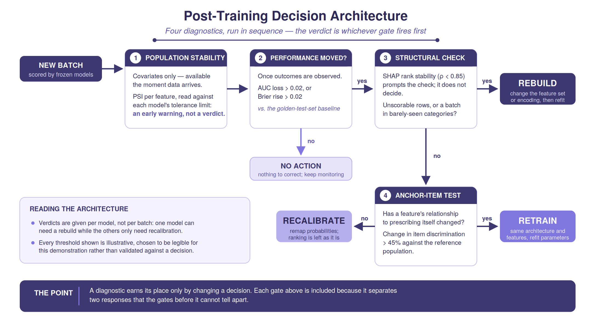
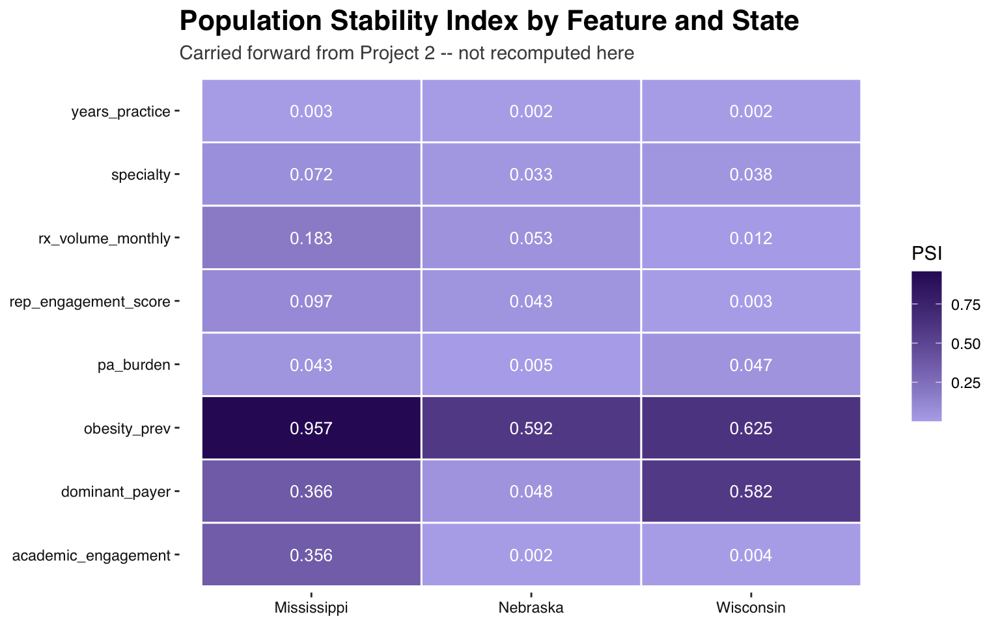
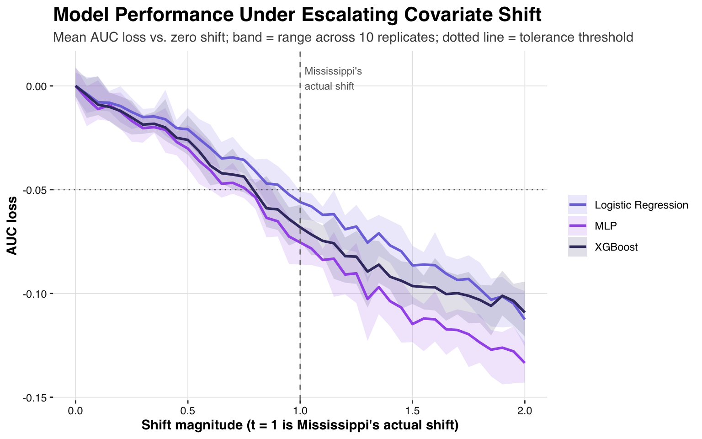
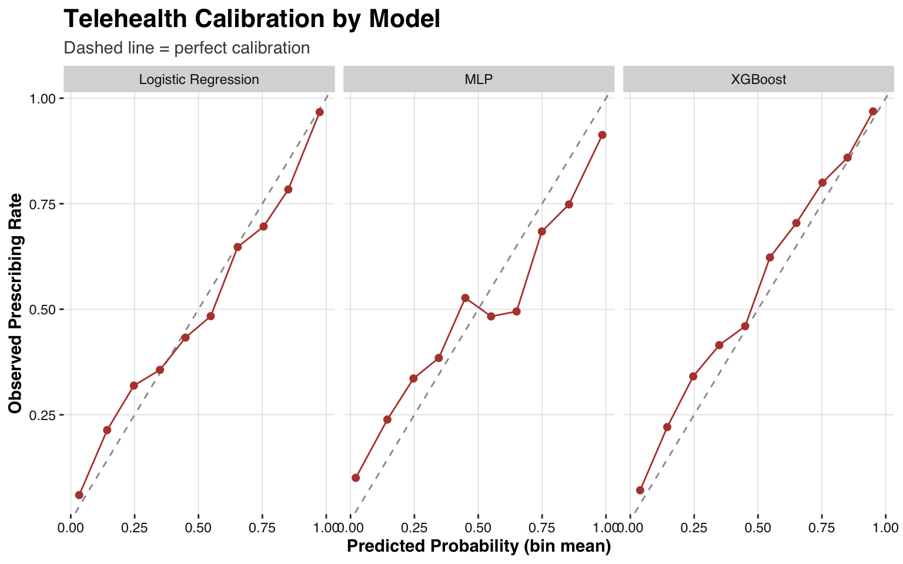
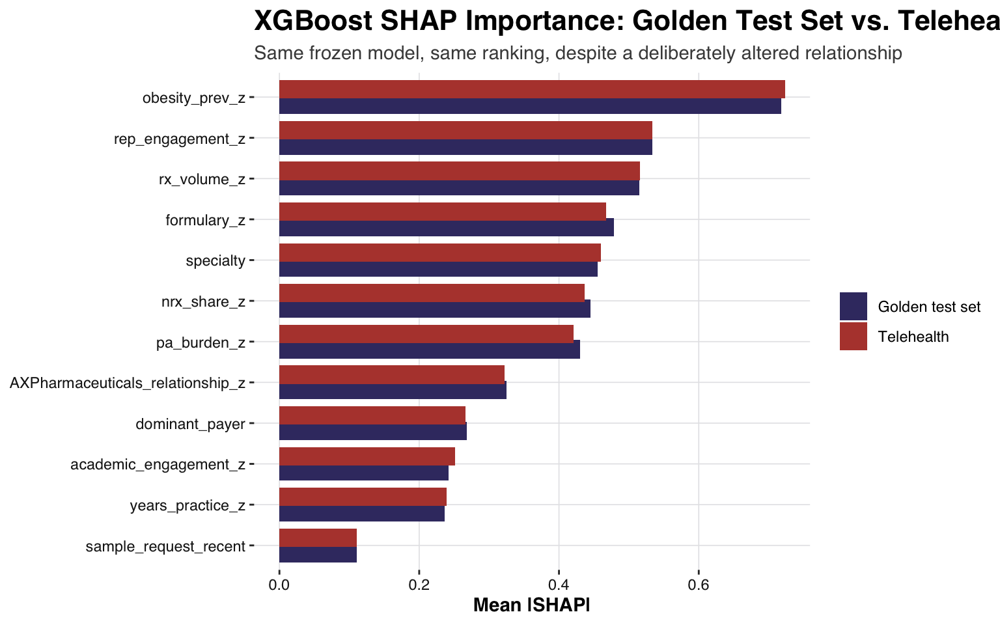
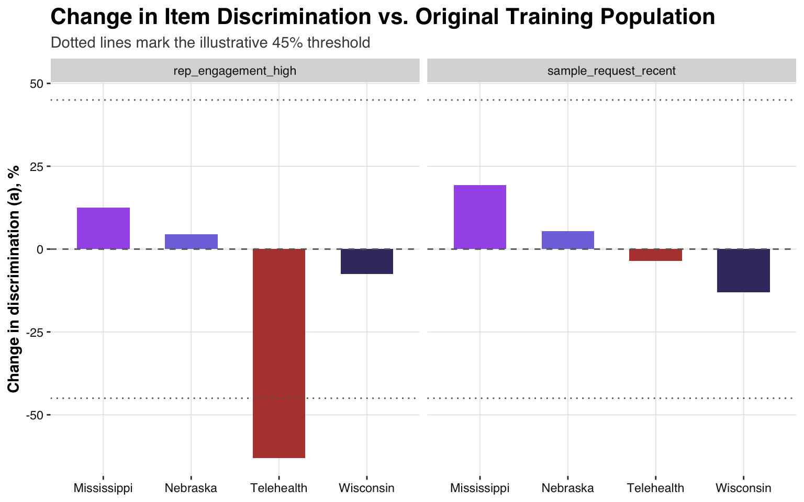
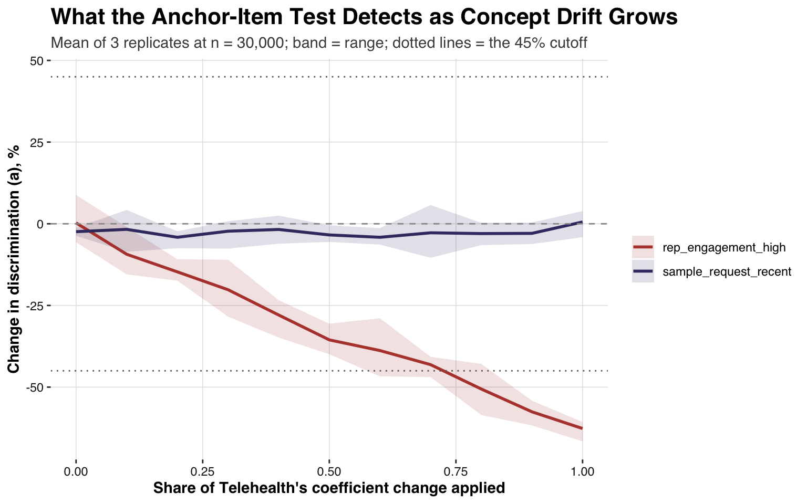
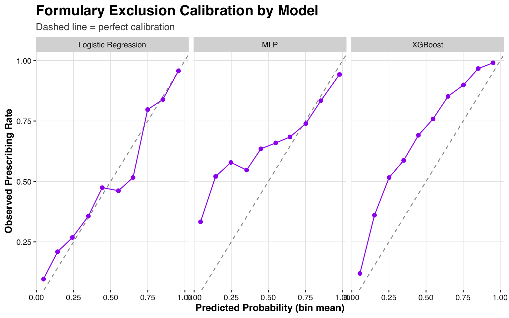

Disclaimer: Rabivy and AX Pharmaceuticals are fictional and were created solely for the purposes of this demonstration and portfolio project.
Introduction
Project 1 built and evaluated three models — Logistic Regression, XGBoost, and an MLP — predicting HCP propensity to prescribe Rabivy, a fictional obesity asset, on a fully synthetic dataset of 5,000 HCPs, evaluated against a held-out golden test set.
Project 2 investigated how those same models perform when the underlying HCP population’s characteristics look different from what they were trained on. It took the three original models, froze them exactly as originally trained, and scored them against three simulated state populations (Nebraska, Wisconsin, Mississippi) whose covariate distributions were deliberately shifted while the data-generating process (DGP) was held fixed. Across all three states, the results showed that the models were not learning spurious relationships that break down under shift; rather, the learned relationships held up, while the predicted probabilities drifted out of calibration as the population diverged from the training distribution. A model that captured the data-generating process exactly would stay calibrated under a pure covariate shift; these models drift because they are fitted approximations, extrapolating into regions of feature space the training sample covered thinly. That is the practical case for routine drift monitoring.
Establishing that degradation exists, and quantifying it, is necessary but incomplete. Diagnostic instruments (e.g., AUC, Brier score, and PSI) are useful only insofar as they inform a decision. When drift is detected in new data, three responses are available:
Retrain — refit the model on the new data, keeping the same architecture and the same feature set, so that only the internal weights or splits are updated. Warranted when a feature’s relationship to the outcome has changed (concept drift): the model’s learned parameters no longer describe the world, but the shape of the model is still adequate to it.
Recalibrate — adjust the model’s predicted probabilities without changing its structure. Appropriate when every feature’s relationship to the outcome is unchanged, but the population’s overall base rate has shifted — a monotonic remapping of the predicted probability scale corrects this without touching any feature’s learned relationship. Because the remapping preserves the order of predictions, recalibration restores calibration (Brier score) but cannot recover lost discrimination (AUC). A model that has lost more discrimination than a deployment can accept therefore cannot be corrected this way, even with every relationship intact: the population has moved into a region where the fitted surface was a less accurate approximation, and only refitting moves the approximation to where the population now is. Such a case escalates to Retrain rather than being recalibrated.
Rebuild — change the feature set or encoding, and refit on that new footing. Warranted when the mapping from inputs to outcome has broken down as a representation rather than as a set of weights: a feature is no longer computable for part of the new population, or the model is being asked to score a region of feature space it was never built on. Retraining alone does not address this, because the problem is what the model is made of rather than what its parameters are set to.
Project 3, this project, develops a decision architecture, built on four diagnostic components, for choosing the correct approach in a real deployment environment:
PSI, read against a tolerance limit. Requires only the new batch’s covariates (not outcomes), so it is the only check available the moment new data arrives. On its own a PSI value says how far the population has moved but not whether that distance matters, so it is paired with a sensitivity analysis that establishes, per model, how much shift each can absorb before performance degrades unacceptably. Together they are an early warning: a reason to look, not a verdict.
Discrimination and calibration, once outcomes are eventually observed. This is the first check that can confirm the model’s real-world performance has actually moved. Performance counts as having moved when AUC falls by more than 0.02 or the Brier score rises by more than 0.02 against the golden-test-set baseline — illustrative thresholds, chosen for this demonstration rather than validated against a downstream decision. If neither moves, no further investigation is needed and no intervention is indicated.
SHAP rank stability and structural checks, if performance has moved. A frozen model’s SHAP ranking changes whenever its inputs change, so a drop in rank stability does not mean the model’s logic has failed; it means the model is operating in a region of feature space it was not built on. A drop below ρ = 0.85 (an illustrative threshold) therefore prompts a structural check: can every model score every row, and does a substantial share of the batch fall into categories the training population barely contained? A structural break is the evidence for Rebuild. If SHAP rank stability holds, that does not yet mean the underlying relationship is intact — a case where SHAP holds despite a relationship that changed substantially is demonstrated below.
Anchor-item invariance. Reserved for a case that is still ambiguous after step 3: performance has degraded, PSI may or may not provide insight into why, and there is no structural break. Alongside it sits a discrimination floor: an AUC loss beyond 0.05 escalates to Retrain even when no relationship has changed, for the reason given above. A breach within 0.005 of that floor is reported but not acted on automatically — two models can fall either side of a hard cutoff, which is noise rather than a difference in kind, so the architecture flags a borderline breach and refers it to judgment.
The four components run in sequence, and the sequence is what produces a verdict:

The decision architecture: four diagnostics, run in sequence.
A drop in SHAP rank stability at step 3 is a prompt for the structural check, not a verdict on its own; the structural evidence decides. The thresholds shown are illustrative throughout, and each is stated where it is first used.
Population Stability Index
Population Stability Index (PSI) is a standard metric in model-risk and credit-scoring practice for quantifying how much a population has shifted relative to a reference distribution. A value near 0 means the two distributions look essentially the same; larger values mean the new population has moved further from the reference. Industry convention treats PSI < 0.1 as no significant shift, 0.1–0.25 as a moderate shift, and > 0.25 as a major shift warranting attention. In Project 2, PSI was computed per feature, per state, against the original 5,000-HCP population. The PSI heatmap is reproduced below.
Show code
ggplot(drift$psi_table, aes(x = state, y = feature, fill = psi)) +geom_tile(color ="white", linewidth =0.5) +geom_text(aes(label =round(psi, 3)), color ="white", size =3.5) +scale_fill_gradient(low ="#B5AFEB", high ="#311465", name ="PSI") +labs(title ="Population Stability Index by Feature and State",subtitle ="Carried forward from Project 2 -- not recomputed here",x =NULL, y =NULL) + Rabivy_theme +theme(panel.grid.major =element_blank())

PSI heatmap (recapped from Project 2) – feature x state, vs. the original training population
In Project 2, only the distribution of input features was changed per state, by design. The coefficients relating those features to prescribing probability were held fixed throughout. This isolates a specific question: does the model generalize to a differently-shaped population, given that the underlying relationship has not changed? This is explicitly not a concept-drift study as the DGP coefficients themselves were never adjusted.
Sensitivity Analysis: turning PSI into an early warning
PSI quantifies how far a new population has moved but does not indicate how much movement a given model can absorb before its performance degrades unacceptably. This is what makes a PSI reading actionable at step 1, before any outcome is observed: a batch whose shift approaches a model’s tolerance limit is a batch to watch, even though nothing has yet been shown to have degraded. Nebraska, Wisconsin, and Mississippi are three fixed snapshots of covariate shift. This section uses a series of populations that fall between “no shift at all” and “Mississippi’s full shift”. For example, a population shifted 25% of the way toward Mississippi’s specific combination of changes, another shifted 50% of the way, another 75%, all the way to 100% (Mississippi itself), and then beyond (up to 200%).
At each point along that sequence, we simulate ten independent populations and score them with the frozen models, then track how AUC changes as the shift increases. AUC loss is measured against the same simulation at zero shift, so that differences between the re-simulated populations and the original golden test set are not mistaken for drift. This identifies a tolerance limit: the first point along that sequence where the mean AUC loss across replicates exceeds 0.05 (an illustrative threshold). The DGP is held fixed throughout.
Show code
sens <-readRDS("results/sensitivity_analysis.rds")sens_long <- sens$sensitivity_table %>%select(t, matches("^(lr|xgb|mlp)_auc_loss(_min|_max)?$")) %>%pivot_longer(-t, names_to =c("model", "stat"), names_pattern ="(lr|xgb|mlp)_auc_loss_?(.*)") %>%mutate(stat =if_else(stat =="", "mean", stat),model =recode(model, lr ="Logistic Regression", xgb ="XGBoost", mlp ="MLP")) %>%pivot_wider(names_from = stat, values_from = value)ggplot(sens_long, aes(x = t, color = model, fill = model)) +geom_ribbon(aes(ymin = min, ymax = max), alpha =0.15, color =NA) +geom_line(aes(y = mean), linewidth =1) +geom_hline(yintercept =-sens$auc_drop_threshold, linetype ="dotted", color ="grey40") +geom_vline(xintercept =1, linetype ="dashed", color ="grey50") +scale_color_manual(values =c("Logistic Regression"= Rabivy_violet, "XGBoost"="#3D3870", "MLP"="#A45EE9")) +scale_fill_manual(values =c("Logistic Regression"= Rabivy_violet, "XGBoost"="#3D3870", "MLP"="#A45EE9")) +annotate("text", x =1.02, y =max(sens_long$max), label ="Mississippi's\nactual shift", hjust =0, vjust =1, size =3, color ="grey40") +labs(title ="Model Performance Under Escalating Covariate Shift",subtitle =sprintf("Mean AUC loss vs. zero shift; band = range across %d replicates; dotted line = tolerance threshold", sens$n_replicates),x ="Shift magnitude (t = 1 is Mississippi's actual shift)", y ="AUC loss", color =NULL, fill =NULL) + Rabivy_theme

AUC vs. shift magnitude (t=1 is Mississippi’s actual shift; t>1 extrapolates beyond it)
Show code
kable(sens$tolerance_limits %>%select(Model = model, `Tolerance limit (t)`= tolerance_t, Interpretation = interpretation),caption =sprintf("Tolerance limits: first magnitude where mean AUC loss exceeds %.2f absolute", sens$auc_drop_threshold)) %>%kable_styling(bootstrap_options =c("striped", "hover", "condensed"), full_width =FALSE)
Tolerance limits: first magnitude where mean AUC loss exceeds 0.05 absolute
Model
Tolerance limit (t)
Interpretation
Logistic Regression
0.95
Mean AUC loss exceeds 0.05 at ~95% of Mississippi's shift magnitude
XGBoost
0.80
Mean AUC loss exceeds 0.05 at ~80% of Mississippi's shift magnitude
MLP
0.80
Mean AUC loss exceeds 0.05 at ~80% of Mississippi's shift magnitude
XGBoost and the MLP cross the tolerance threshold first, both at 80% of Mississippi’s shift magnitude, against 95% for logistic regression. These limits are a comparison between models on a common scale, measured against this sweep’s own unshifted populations, and they are not comparable to the per-state figures in Project 2, which come from a separately simulated population.
These tolerance limits are specific to shift along Mississippi’s particular combination of covariates and are not indicative of how much drift the models can absorb in any direction. A shift that moved a different combination of features could have a different tolerance limit entirely.
Like PSI, this analysis is confined to covariate shift, so it can never provide evidence that a feature’s relationship to the outcome has changed — which is what the Retrain branch turns on. To demonstrate a case where Retrain is necessary, we simulated a new Telehealth-First Segment batch. Its covariates are drawn from the same, unshifted distributions as the training population — only the DGP itself is altered in four specific coefficients. This makes it concept drift rather than covariate shift: the population looks identical to training, but the relationship between features and outcome does not.
Telehealth-First Segment Dataset
A Telehealth-First (or virtual-first) model is a healthcare approach that prioritizes remote digital consultations as the primary entry point for patient care. The new simulated Telehealth-First Segment batch reflects a plausible commercial scenario: a subset of HCPs whose prescribing behavior is increasingly mediated through digital self-service channels rather than in-person representative contact.
The four coefficients altered were chosen to represent this specific scenario:
rep-contact recency and academic/conference engagement both depend on physical presence, so a telehealth-mediated population plausibly weakens their influence.
an existing in-person relationship with a company representative carries less weight once the interaction has moved online.
a digital self-service action (e.g., a sample request submitted through a portal rather than obtained through a rep visit) becomes comparatively more informative of intent.
Every other coefficient (obesity prevalence, PA burden, script volume, specialty, payer) is held fixed, isolating the test to this one channel-mediated hypothesis. Following the sequence above, PSI runs first:
PSI, Telehealth vs. the original training population
feature
psi
interpretation
years_practice
0.0035
no significant shift
pa_burden
0.0023
no significant shift
rep_engagement_score
0.0022
no significant shift
academic_engagement
0.0019
no significant shift
nrx_share
0.0014
no significant shift
obesity_prev
0.0013
no significant shift
rx_volume_monthly
0.0009
no significant shift
AXPharmaceuticals_relationship
0.0008
no significant shift
sample_request_recent
0.0004
no significant shift
specialty
0.0001
no significant shift
formulary_tier
0.0001
no significant shift
dominant_payer
0.0000
no significant shift
PSI shows no meaningful shift on any feature since Telehealth’s covariates are drawn from the same distributions as training by construction.
Discrimination and Calibration
AUC (Area Under the ROC Curve) measures how well a model ranks HCPs who go on to prescribe above those who do not: a value of 0.5 corresponds to random guessing, and 1.0 to perfect separation. Gini (calculated as 2×AUC − 1 and expressed as a percentage) conveys the same information on a 0–100% scale.
Brier score measures how close predicted probabilities are to the actual outcomes on average, with lower values indicating better calibration. Unlike AUC/Gini, it’s sensitive to the absolute probability level, not just ranking.
Show code
shaded_metrics_kable(build_metrics_table(th, golden), "Telehealth: discrimination and calibration vs. the golden-test-set baseline")
Telehealth: discrimination and calibration vs. the golden-test-set baseline
Model
AUC (baseline)
AUC (batch)
ΔAUC
Gini % (baseline)
Gini % (batch)
Brier (baseline)
Brier (batch)
ΔBrier
Logistic Regression
0.9183
0.8933
-0.025
83.6598
78.6683
0.0954
0.1115
0.0161
XGBoost
0.9118
0.8774
-0.0343
82.3583
75.4887
0.0976
0.1234
0.0258
MLP
0.8980
0.8680
-0.03
79.5992
73.6036
0.1112
0.1301
0.0189
Show code
batch_calibration_table(th$scored_df) %>%ggplot(aes(x = pred_rate, y = obs_rate)) +geom_abline(intercept =0, slope =1, linetype ="dashed", color ="grey60") +geom_line(color = state_palette[["Telehealth"]]) +geom_point(size =1.8, color = state_palette[["Telehealth"]]) +facet_wrap(~ model) +labs(title ="Telehealth Calibration by Model", subtitle ="Dashed line = perfect calibration",x ="Predicted Probability (bin mean)", y ="Observed Prescribing Rate") + Rabivy_theme

Telehealth calibration by model
The calibration plot compares the model’s predicted probabilities (x-axis) with the actual observed prescribing rates (y-axis), binned by predicted probability; the dashed grey line marks perfect calibration, and any deviation from it shows where a model is over- or under-confident. PSI showed no shift (Step 1 of the sequence), yet every model loses discrimination and calibrates worse (Step 2) — confirmation that drift is occurring here that PSI cannot detect. Step 3 checks SHAP rank stability and whether there is any structural break.
SHAP Rank Stability
When a new batch of HCP data arrives, the question is whether the frozen model’s relationship to prescribing still holds. Project 2 verified that XGBoost’s SHAP-based feature ranking remains stable under covariate shift (Spearman ρ 0.94–0.97 across all three states). However, a frozen, deterministic model presented with inputs of the same shape will explain itself identically, regardless of whether the relationship between those inputs and the true outcome has changed.
Mean |SHAP| importance, golden test set vs. Telehealth (Spearman rho = 1.000)
Feature
Golden test set
Telehealth
obesity_prev_z
0.7178
0.7233
rep_engagement_z
0.5333
0.5333
rx_volume_z
0.5152
0.5159
formulary_z
0.4791
0.4674
specialty
0.4552
0.4596
nrx_share_z
0.4449
0.4366
pa_burden_z
0.4301
0.4206
AXPharmaceuticals_relationship_z
0.3252
0.3226
dominant_payer
0.2681
0.2659
academic_engagement_z
0.2422
0.2518
years_practice_z
0.2361
0.2396
sample_request_recent
0.1107
0.1109
XGBoost SHAP feature-importance ranking: golden test set vs. the Telehealth batch
Show code
shap_compare %>%pivot_longer(-feature, names_to ="population", values_to ="mean_abs_shap") %>%mutate(population =recode(population, golden_test_set ="Golden test set", telehealth ="Telehealth")) %>%ggplot(aes(x =reorder(feature, mean_abs_shap), y = mean_abs_shap, fill = population)) +geom_col(position =position_dodge(width =0.75)) +coord_flip() +scale_fill_manual(values =c(`Golden test set`= Rabivy_palette[3], Telehealth = state_palette[["Telehealth"]])) +labs(title ="XGBoost SHAP Importance: Golden Test Set vs. Telehealth",subtitle ="Same frozen model, same ranking, despite a deliberately altered relationship",x =NULL, y ="Mean |SHAP|", fill =NULL) + Rabivy_theme

SHAP importance side-by-side: golden test set vs. Telehealth, same frozen XGBoost model
We deliberately altered the true relationship between four features and prescribing in this batch — yet XGBoost’s SHAP ranking above is nearly identical to the one it produces on the golden test set. SHAP importance measures how much each feature moves a model’s output, given that model’s fixed internal parameters. Concretely, SHAP takes a trained model and one input row and returns attributions — a per-feature share of that row’s predicted probability, credited according to how much each feature moved the output away from the model’s average prediction. The actual outcome for that row is not part of this calculation. This means that when both the model and the input distribution are frozen, as is the case for Telehealth, the attributions it produces are frozen too, regardless of whether the true relationship between those inputs and prescribing has changed. Confirming that a model is still correct requires comparing behavior against actual outcomes — which SHAP structurally cannot do, and which the anchor-item invariance test introduced next is built specifically to do instead.
Anchor-Item Invariance Testing
The IRT Framework
This section uses Item Response Theory (IRT) as applied to survey-style instruments — the framework behind scales like a depression or anxiety inventory, where a respondent’s answer to any one question is not graded right or wrong, only recorded and related to an underlying trait. The property that matters here is measurement invariance: if a new group of respondents differs from the original only in their overall level of the trait, an indicator that reliably signaled it before should still signal it, once that overall level is accounted for. If instead an indicator’s relationship to the trait genuinely changes, re-estimating its parameters on the new group will disagree with the original estimate even after accounting for the group’s overall shift.
Each item gets a difficulty and discrimination parameter. Difficulty (b) is how high the underlying trait has to be before an indicator tends to show up, expressed on the same scale as the trait itself: a b of 0 means an HCP of average prescribing propensity has an even chance of showing the indicator, while a higher b means it takes a stronger propensity. Discrimination (a) is how sharply the indicator tracks the trait — how much more likely it becomes as propensity rises. The tables below report b, so that a rise means “this indicator now takes more propensity to show up”.
Anchor items are the small subset of indicators assumed to hold steady across groups, used to place two groups’ trait estimates on a common scale before checking whether the remaining (“suspect”) indicators still behave the same way.
In this scenario, HCPs are respondents, prescribing propensity is the latent trait, and the observed prescribing outcome together with a small number of features, recast as binary indicators, are items.
Anchor Selection
Three anchors are used here: the prescribing outcome itself (prescribe_likely), years_practice and nrx_share. The outcome is anchored because it defines the trait: prescribing propensity is, by construction, whatever drives observed prescribing, so its item parameters serve as the scale’s reference point, while differences in a batch’s overall prescribing level are absorbed by that batch’s freely estimated latent mean and variance. years_practice is chosen because its relationship to prescribing propensity is associated with career stage and clinical experience, not with the commercial, access, or clinical-guideline dynamics this harness monitors. nrx_share reflects a physician’s existing patient-panel turnover and practice-mix pattern, similarly insulated from a single drug’s commercial environment. Anchor selection here is a subjective judgment of content — the same approach real testing programs use when choosing anchor items by review.
Item parameters are only identifiable for items with sufficient discrimination. Features weakly related to the latent trait (academic engagement, existing rep relationship) produce a difficulty estimate that is numerically unstable at any sample size. These items are excluded from the formal test on that basis.
The 45% cutoff used below is set from the replicated evidence in R/03c_irt_replication.R and recorded in R/06_decision_tree.R: averaged across eight replicates at n = 30,000, covariate shift alone moves an item’s discrimination by at most 21%, and no single covariate-shift replicate moves one past 29%, while the batch with a genuinely altered relationship averages 61%. Like every threshold here it is illustrative.
Each suspect item is tested in a small model containing only the three anchors and that item, comparing the original training population against each batch. We re-simulated larger (n=30,000) populations, since a larger sample size was needed for a stable result. Of the four coefficients altered in Telehealth’s construction, two (academic engagement and existing representative relationship) had insufficient discrimination and were excluded from this analysis. The remaining two, rep_engagement_high and sample_request_recent, are tested below.
What this batch is
Telehealth’s covariates are drawn from exactly the same distributions as the training population — PSI finds nothing on any of the twelve model inputs — and its outcomes have been observed. What was changed is the data-generating process itself, in four coefficients: rep-contact recency fell from 0.78 to −0.10, academic engagement from 0.42 to 0.05, an existing representative relationship from 0.62 to 0.05, and a recent digital sample request rose from 0.35 to 1.25. The population looks identical to training; what a given feature is worth has changed underneath it. In Steps 1 to 3, PSI saw nothing, discrimination and calibration both degraded, and SHAP rank stability held at ρ ≈ 1.000.
Show code
invariance <-readRDS("results/golden_items_large_n.rds") %>%mutate(b_original =-d_original / a_original,b_batch =-d_batch / a_batch,b_shift = b_batch - b_original)invariance %>%select(Batch = batch, Item = item, Converged = converged,`Discrimination a (original)`= a_original, `Discrimination a (batch)`= a_batch,`Change in a, %`= a_pct_change,`Difficulty b (original)`= b_original, `Difficulty b (batch)`= b_batch,`Shift in b`= b_shift) %>%kable(digits =3, caption ="Anchor-item invariance test (n=30,000 per batch), anchors: prescribe_likely, years_practice, nrx_share") %>%kable_styling(bootstrap_options =c("striped", "hover", "condensed"))
Anchor-item invariance test (n=30,000 per batch), anchors: prescribe_likely, years_practice, nrx_share
Batch
Item
Converged
Discrimination a (original)
Discrimination a (batch)
Change in a, %
Difficulty b (original)
Difficulty b (batch)
Shift in b
Nebraska
rep_engagement_high
TRUE
0.497
0.519
4.486
-0.001
0.590
0.591
Nebraska
sample_request_recent
TRUE
1.249
1.317
5.417
0.869
0.763
-0.107
Wisconsin
rep_engagement_high
TRUE
0.497
0.460
-7.493
-0.002
0.372
0.374
Wisconsin
sample_request_recent
TRUE
1.300
1.132
-12.973
0.849
1.252
0.403
Mississippi
rep_engagement_high
TRUE
0.500
0.562
12.478
-0.001
0.930
0.931
Mississippi
sample_request_recent
TRUE
1.235
1.474
19.315
0.876
0.671
-0.205
Telehealth
rep_engagement_high
TRUE
0.492
0.182
-63.055
0.000
-0.103
-0.102
Telehealth
sample_request_recent
TRUE
1.235
1.191
-3.551
0.876
0.902
0.026
Show code
ggplot(invariance, aes(x = batch, y = a_pct_change, fill = batch)) +geom_col(width =0.6) +geom_hline(yintercept =0, linetype ="dashed", color ="grey40") +geom_hline(yintercept =c(-45, 45), linetype ="dotted", color ="grey40") +facet_wrap(~ item) +scale_fill_manual(values = state_palette) +labs(title ="Change in Item Discrimination vs. Original Training Population",subtitle ="Dotted lines mark the illustrative 45% threshold",x =NULL, y ="Change in discrimination (a), %", fill =NULL) + Rabivy_theme +theme(legend.position ="none")

Change in item discrimination (a) by batch and item – Telehealth stands apart on rep_engagement_high
The signal sits in the discrimination parameter, not in difficulty, and it sits in rep_engagement_high. In this draw its discrimination falls by 63% in Telehealth, from 0.49 to 0.18, while no covariate-shift state moves that item by more than 13% (Mississippi, at +12.5%); the replicated figures below put the same comparison on a firmer footing. That is what the altered DGP describes: rep-contact recency went from one of the stronger predictors of prescribing (coefficient 0.78) to a marginally negative one (−0.10), and an item that no longer tracks the trait is, in IRT terms, an item that no longer discriminates.
Difficulty is the wrong place to look for this: an item that stops tracking the trait does not start requiring more or less prescribing propensity before it shows up — it simply stops sorting HCPs by propensity at all, which is what a falling a expresses. The covariate-shift states show the mirror image, moving b while leaving a broadly intact: a shifted population shows the indicator at a different overall rate, so it takes a different level of propensity before the indicator appears, without any change in what the indicator measures.
sample_request_recent does not separate, even though its coefficient was raised further than rep_engagement_high’s was lowered (0.35 to 1.25). This is a property of the design rather than a failure of estimation. Because the prescribing outcome is itself an anchor, a feature that becomes a stronger driver of prescribing pulls the latent trait toward itself, and the model absorbs much of that by rescaling the trait’s variance rather than by raising that item’s discrimination. A feature whose relationship weakens cannot be absorbed the same way, so it shows plainly. The practical implication is that this test is more sensitive to features that stop predicting than to features that start.
The results above are based on one simulation draw. To check whether the separation is stable, the same test was repeated across 8 independent, reseeded replicates at the same sample size.
Show code
repl <-readRDS("results/golden_items_replicated.rds")$replicate_summarykable(repl %>%select(Batch = batch, Item = item, `Replicates converged`= n_converged,Replicates = n_reps, `Mean change in a, %`= a_pct_change_mean,`SD of change in a`= a_pct_change_sd, `Mean shift in d`= d_shift_mean),digits =3, caption ="Item-parameter shifts across 8 independent replicates (n=30,000 each)") %>%kable_styling(bootstrap_options =c("striped", "hover", "condensed"))
Item-parameter shifts across 8 independent replicates (n=30,000 each)
Batch
Item
Replicates converged
Replicates
Mean change in a, %
SD of change in a
Mean shift in d
Mississippi
rep_engagement_high
8
8
16.907
6.406
-0.539
Mississippi
sample_request_recent
8
8
21.011
5.459
0.084
Nebraska
rep_engagement_high
8
8
4.895
3.568
-0.299
Nebraska
sample_request_recent
8
8
5.555
3.360
0.083
Telehealth
rep_engagement_high
8
8
-60.846
3.372
0.010
Telehealth
sample_request_recent
8
8
2.353
2.476
-0.041
Wisconsin
rep_engagement_high
8
8
-2.788
3.676
-0.155
Wisconsin
sample_request_recent
8
8
-17.264
1.850
-0.317
Every fit converged in all 8 replicates and in every batch. Telehealth’s discrimination change on rep_engagement_high averages −60.8% (sd 3.4), against +4.9% for Nebraska, −2.8% for Wisconsin and +16.9% for Mississippi.
Every one of the 8 Telehealth replicates clears the 45% cutoff (smallest movement 57.1%) and none of the 24 covariate-shift replicates reaches it (largest 24.1%). This is the evidence behind Telehealth’s Retrain verdict: the anchor-item test detects a genuine change in the feature-outcome relationship, which only refitting — not a probability recalibration — can correct.
How much relationship change does the test detect?
The 45% cutoff was chosen to sit between the largest movement any non-drifted batch produced and the movement the drifted one produced. To measure how much relationship change the test can actually see, Telehealth’s four altered coefficients are scaled from 0% of their change (the original relationship, no drift at all) to 100% (Telehealth as built), with covariates held at baseline throughout. The anchor-item test is run at each step across three replicates.
Show code
cds <-readRDS("results/concept_drift_sweep.rds")cds_band <- cds$replicates %>%group_by(t, item) %>%summarise(lo =min(a_pct_change), hi =max(a_pct_change),mid =mean(a_pct_change), .groups ="drop")ggplot(cds_band, aes(x = t, y = mid, color = item, fill = item)) +geom_ribbon(aes(ymin = lo, ymax = hi), alpha =0.15, color =NA) +geom_line(linewidth =1) +geom_hline(yintercept =c(-cds$threshold, cds$threshold), linetype ="dotted", color ="grey40") +geom_hline(yintercept =0, linetype ="dashed", color ="grey60") +scale_color_manual(values =c(rep_engagement_high = state_palette[["Telehealth"]],sample_request_recent = Rabivy_palette[3])) +scale_fill_manual(values =c(rep_engagement_high = state_palette[["Telehealth"]],sample_request_recent = Rabivy_palette[3])) +labs(title ="What the Anchor-Item Test Detects as Concept Drift Grows",subtitle =sprintf("Mean of %d replicates at n = %s; band = range; dotted lines = the %d%% cutoff", cds$n_replicates, format(cds$n_per_point, big.mark =","), cds$threshold),x ="Share of Telehealth's coefficient change applied", y ="Change in discrimination (a), %",color =NULL, fill =NULL) + Rabivy_theme

Detection curve: how far an item’s discrimination moves as the underlying relationship is scaled from unchanged to fully drifted
Show code
cds$sweep %>%filter(item =="rep_engagement_high") %>%select(`Share of coefficient change`= t, `Replicates converged`= n_converged,`Mean change in a, %`= a_pct_change) %>%kable(digits =2, caption ="rep_engagement_high: discrimination change against the share of Telehealth's coefficient change applied") %>%kable_styling(bootstrap_options =c("striped", "hover", "condensed"), full_width =FALSE)
rep_engagement_high: discrimination change against the share of Telehealth's coefficient change applied
Share of coefficient change
Replicates converged
Mean change in a, %
0.0
3
0.27
0.1
3
-9.33
0.2
3
-14.72
0.3
3
-20.18
0.4
3
-27.93
0.5
3
-35.54
0.6
3
-38.81
0.7
3
-43.12
0.8
3
-50.58
0.9
3
-57.55
1.0
3
-62.67
At t = 0 the drifted population is generated from the same DGP as the reference population, so any movement the test reports is estimation noise rather than drift. Across the three replicates the largest movement is 8.8% (rep_engagement_high; 3.7% for sample_request_recent). That is the noise floor at this sample size, which the threshold has to clear.
The detection point for rep_engagement_high falls at about 73% of Telehealth’s coefficient change (where the curve crosses the cutoff) whereas sample_request_recent never deviates from the noise band anywhere on the sweep.
This finding supports the 45% threshold - it sits about five times the noise floor, and it detects a relationship change from roughly three-quarters of Telehealth’s magnitude upward. A lower cutoff would catch smaller changes at the cost of detecting covariate shift, which moved this item by as much as 24% across the three states. The same direction-specific caveat applies as for the covariate tolerance limits: this curve describes Telehealth’s particular combination of coefficient changes, not concept drift in general.
Formulary Exclusion Segment Dataset
Nebraska, Wisconsin, Mississippi, and Telehealth exercise the Retrain and Recalibrate branches. To demonstrate when Rebuild is necessary, we simulated a new batch reflecting a fictional scenario in which a major payer excludes Rabivy from its formulary, pushing most HCPs’ patients from Commercial/Medicare/Medicaid coverage into out-of-pocket status instead. Only payer mix is altered directly; two other features move as mechanical consequences of it, as the PSI table below shows. The underlying relationship between payer status and prescribing is unchanged — out-of-pocket patients get the same DGP coefficient as Commercial ones.
Out-of-pocket was never the dominant payer for any HCP in the original training population, so the frozen models learned nothing about it as a category: the logistic regression has no coefficient for it at all and cannot score roughly three-quarters of this batch, and while XGBoost can technically score every row, its trees never saw that region of feature space and so cannot score it reliably.
Population Stability Index
Show code
fe <-readRDS("results/formulary_exclusion_scored.rds")fe_df <-readRDS("data/new_batches/formulary_exclusion_segment.rds")kable(compute_psi_table(fe_df, original_df), digits =4, caption ="PSI, Formulary Exclusion vs. the original training population") %>%kable_styling(bootstrap_options =c("striped", "hover", "condensed"), full_width =FALSE)
PSI, Formulary Exclusion vs. the original training population
feature
psi
interpretation
dominant_payer
9.5791
major shift
formulary_tier
2.9042
major shift
pa_burden
2.8606
major shift
obesity_prev
0.0034
no significant shift
rep_engagement_score
0.0032
no significant shift
nrx_share
0.0027
no significant shift
years_practice
0.0017
no significant shift
academic_engagement
0.0015
no significant shift
rx_volume_monthly
0.0012
no significant shift
AXPharmaceuticals_relationship
0.0010
no significant shift
specialty
0.0007
no significant shift
sample_request_recent
0.0000
no significant shift
PSI concentrates the shift in dominant_payer as expected, but pa_burden (prior authorization) and formulary_tier move too. Neither was altered independently: both are generated conditional on payer. PA burden is fixed at exactly 0 for out-of-pocket patients, and out-of-pocket coverage always carries preferred formulary status, so pushing most of the batch into that category mechanically shifts both distributions with no change to the rules generating them. Because formulary_z carries a coefficient of 0.88 in the DGP, this also raises the batch’s true prescribing rate, from roughly 30% to 67%. Every other feature stays unshifted: the batch alters payer structure, and only what payer structure determines.
Discrimination and Calibration
Show code
shaded_metrics_kable(build_metrics_table(fe, golden), "Formulary Exclusion: discrimination and calibration vs. the golden-test-set baseline")
Formulary Exclusion: discrimination and calibration vs. the golden-test-set baseline
Model
AUC (baseline)
AUC (batch)
ΔAUC
Gini % (baseline)
Gini % (batch)
Brier (baseline)
Brier (batch)
ΔBrier
Logistic Regression
0.9183
0.8205
-0.0978
83.6598
64.1023
0.0954
0.1619
0.0665
XGBoost
0.9118
0.8347
-0.0771
82.3583
66.9332
0.0976
0.1889
0.0913
MLP
0.8980
0.8066
-0.0914
79.5992
61.3234
0.1112
0.2085
0.0973
Show code
batch_calibration_table(fe$scored_df) %>%ggplot(aes(x = pred_rate, y = obs_rate)) +geom_abline(intercept =0, slope =1, linetype ="dashed", color ="grey60") +geom_line(color = state_palette[["Formulary Exclusion"]]) +geom_point(size =1.8, color = state_palette[["Formulary Exclusion"]]) +facet_wrap(~ model) +labs(title ="Formulary Exclusion Calibration by Model", subtitle ="Dashed line = perfect calibration",x ="Predicted Probability (bin mean)", y ="Observed Prescribing Rate") + Rabivy_theme

Formulary Exclusion calibration by model
Unlike Telehealth, PSI flags a major shift here; step 2 confirms it is real degradation in discrimination and calibration. Step 3 checks whether SHAP rank stability still holds:
SHAP Rank Stability
Show code
fe_matrix <-build_matrix(fe_df)fe_shap <-shapviz(lr_xgb$xgb, X = fe_matrix, X_pred = fe_matrix, predict_function = predict)fe_imp <-aggregate_shap(fe_shap$S, predictors)fe_rho <-cor(golden_imp, fe_imp[names(golden_imp)], method ="spearman")tibble(feature =names(golden_imp), golden_test_set = golden_imp, formulary_exclusion = fe_imp[names(golden_imp)]) %>%arrange(desc(golden_test_set)) %>%select(Feature = feature, `Golden test set`= golden_test_set, `Formulary Exclusion`= formulary_exclusion) %>%kable(digits =4, caption =sprintf("Mean |SHAP| importance, golden test set vs. Formulary Exclusion (Spearman rho = %.3f)", fe_rho)) %>%kable_styling(bootstrap_options =c("striped", "hover", "condensed"))
Mean |SHAP| importance, golden test set vs. Formulary Exclusion (Spearman rho = 0.783)
Feature
Golden test set
Formulary Exclusion
obesity_prev_z
0.7178
0.6994
rep_engagement_z
0.5333
0.4971
rx_volume_z
0.5152
0.5346
formulary_z
0.4791
0.8250
specialty
0.4552
0.4226
nrx_share_z
0.4449
0.4399
pa_burden_z
0.4301
0.8093
AXPharmaceuticals_relationship_z
0.3252
0.3065
dominant_payer
0.2681
0.4352
academic_engagement_z
0.2422
0.2610
years_practice_z
0.2361
0.2321
sample_request_recent
0.1107
0.1195
Unlike Telehealth, where SHAP rank stability held at ρ≈1.000, here it drops to ρ=0.783, below the illustrative 0.85 threshold. As shown in the table, attribution has moved to formulary_z and pa_burden_z, the two inputs this batch shifted most. The frozen model has not changed; it is being asked to score a region of feature space it was not built on. Per step 3, this prompts the structural check, which shows that the logistic regression cannot score 3821 of 5,000 rows, and about three-quarters of the batch sits in a payer category that never appeared as a dominant payer in training. That structural break (not the SHAP drop itself) is the evidence for Rebuild. Step 4 is not strictly necessary here but is included to show how the anchor-item test behaves on a batch where the feature-outcome relationship is unchanged.
Anchor-Item Invariance Testing
Both fits converge, and neither item’s discrimination moves past the 45% threshold: rep_engagement_high changes by 32.1% and sample_request_recent by 1.8%. Step 4 is therefore negative: nothing about how these features relate to prescribing changed in this batch and the verdict rests on the structural break found at step 3.
A structural break with an unchanged underlying relationship is the signature of Rebuild rather than Retrain.
Summary of Verdicts
The table below collects the evidence behind every verdict, for each batch and each model.
Show code
dec <-readRDS("results/decision_tree.rds")dec$evidence %>%select(Batch = batch, Model = model, `AUC delta`= auc_delta, `Brier delta`= brier_delta,`Unscorable rows`= n_unscorable, `Batch share in rare categories`= rare_level_share,`SHAP rho`= shap_rho, `Item`= irt_item, `Change in a, %`= a_pct_change) %>%kable(digits =3, caption ="Evidence behind each verdict, by batch and model") %>%kable_styling(bootstrap_options =c("striped", "hover", "condensed"), font_size =12)
Performance has moved (AUC -0.027, Brier +0.017 vs. golden baseline) with no structural break and no concept drift.
NA
Nebraska
XGBoost
Recalibrate
Performance has moved (AUC -0.031, Brier +0.020 vs. golden baseline) with no structural break and no concept drift.
NA
Nebraska
MLP
Recalibrate
Performance has moved (AUC -0.030, Brier +0.021 vs. golden baseline) with no structural break and no concept drift.
NA
Wisconsin
Logistic Regression
Recalibrate
Performance has moved (AUC -0.016, Brier +0.029 vs. golden baseline) with no structural break and no concept drift.
NA
Wisconsin
XGBoost
Recalibrate
Performance has moved (AUC -0.016, Brier +0.031 vs. golden baseline) with no structural break and no concept drift.
NA
Wisconsin
MLP
Recalibrate
Performance has moved (AUC -0.023, Brier +0.039 vs. golden baseline) with no structural break and no concept drift.
NA
Mississippi
Logistic Regression
Rebuild
Cannot score 9 rows (category level unseen in training) -- the feature encoding must change before this model can be refit.
NA
Mississippi
XGBoost
Recalibrate
Performance has moved (AUC -0.050, Brier +0.035 vs. golden baseline) with no structural break and no concept drift.
NA
Mississippi
MLP
Recalibrate
Performance has moved (AUC -0.051, Brier +0.040 vs. golden baseline) with no structural break and no concept drift.
AUC loss (0.051) breaches the 0.05 floor by less than the 0.005 borderline band, so the escalation to Retrain is flagged rather than applied: recalibration will not recover this loss, and whether to refit is a judgment call.
Telehealth
Logistic Regression
Retrain
Anchor-item test flags rep_engagement_high (discrimination a changed -63.1%, above the 45% threshold) -- the feature-outcome relationship has changed.
NA
Telehealth
XGBoost
Retrain
Anchor-item test flags rep_engagement_high (discrimination a changed -63.1%, above the 45% threshold) -- the feature-outcome relationship has changed.
NA
Telehealth
MLP
Retrain
Anchor-item test flags rep_engagement_high (discrimination a changed -63.1%, above the 45% threshold) -- the feature-outcome relationship has changed.
NA
Formulary Exclusion
Logistic Regression
Rebuild
Cannot score 3821 rows (category level unseen in training) -- the feature encoding must change before this model can be refit.
Nebraska and Wisconsin — Recalibrate. Both lose discrimination (AUC −0.016 to −0.031) and calibrate worse (Brier +0.017 to +0.039), the Brier movement being the larger of the two. Performance moved enough to warrant investigation, but not enough to warrant a correction: every model stays within the 0.05 discrimination floor, so what is lost is probability level rather than ranking, which recalibration restores. Step 3 finds nothing structural (every model scores every row and SHAP rank stability holds) and Step 4 finds no item whose discrimination moves past 45%. A shifted population with an intact feature-outcome relationship and intact feature coverage is the case for recalibration.
Mississippi — the verdict differs by model. Steps 1 and 2 run as for the other two states, with the largest performance movement of the three. However, the logistic regression cannot score 9 of 5,000 HCPs at all: their dominant payer is a category it never saw in training, so it has no coefficient to apply. No refit of the existing specification on the original training data reaches those rows, and refitting on Mississippi itself would rest an entire payer category’s coefficient on nine observations. That is a Rebuild, and it is specific to one model. XGBoost and the MLP score every row and pass step 4, so both land on Recalibrate, but both sit at the edge of the discrimination floor: XGBoost loses 0.050 and the MLP 0.051, against a floor of 0.05. The MLP’s breach falls inside the borderline band, so the architecture flags the escalation rather than applying it. Although a monotonic recalibration cannot recover ranking, the judgment made here is to recalibrate both: the residual discrimination loss is accepted knowingly rather than corrected.
Telehealth — Retrain. The anchor-item test flags rep_engagement_high, whose discrimination falls 61% on average across replicates, against an average of at most 17% (Mississippi) for any covariate-shift state: rep-contact recency has stopped tracking prescribing. PSI sees nothing, and SHAP rank stability holds at ρ≈1.000, so this is the case only step 4 catches. A probability recalibration cannot correct a model keyed to a signal that no longer carries; refitting is required. Separately, and not detected by the test, the batch’s DGP also weakened academic engagement and existing relationships and strengthened digital self-service — see Limitation 1.
Formulary Exclusion Segment — Rebuild, for every model. Step 1 flags a major shift concentrated in payer mix; step 2 confirms the largest performance loss of any batch here. At step 3, the structural check shows that the logistic regression cannot score 3,821 of 5,000 rows, and about three-quarters of the batch sits in a payer category that never appeared as a dominant payer in training, which puts XGBoost and the MLP in a region of feature space their fits never covered. Step 4 is negative, as it should be — the relationship between payer status and prescribing never changed. Recalibrating is not the answer, because a probability rescale cannot conjure a coefficient for a category the encoding does not contain. What has to change is the encoding itself, and only then a refit.
Verifying the Remedies (Logistic Regression & XGBoost Demo)
Telehealth is shown with every arm applied for demonstration purposes; the other two batches are shown with the arm their own verdict prescribes. The design is the same for every batch. The batch is split in half, stratified on the outcome; the remedy is fitted on the first half and every arm is evaluated on the second half, which no remedy has seen.
Remedies
Recalibration is Platt scaling — a logistic fit of the outcome on the frozen model’s predicted log-odds. Retraining refits the model on the same set of predictors. Rebuilding re-encodes the payer variable as covered versus out-of-pocket before refitting, collapsing a four-level factor in which any unseen level makes a row unscorable into a two-level one.
Show code
rem <-readRDS("results/remedy_verification.rds")rem$results %>%filter(batch =="Telehealth"| arm =="Frozen"| (batch =="Nebraska"& arm =="Recalibrate") | (batch =="Formulary Exclusion"& arm =="Rebuild")) %>%select(Batch = batch, Arm = arm, Model = model,`Unscorable rows`= n_unscorable, `AUC vs. frozen`= auc_vs_frozen,`Brier vs. frozen`= brier_vs_frozen) %>%kable(digits =3, caption ="What each remedy recovers, measured on the held-out half of each batch") %>%kable_styling(bootstrap_options =c("striped", "hover", "condensed"), font_size =12)
What each remedy recovers, measured on the held-out half of each batch
Batch
Arm
Model
Unscorable rows
AUC vs. frozen
Brier vs. frozen
Nebraska
Frozen
Logistic Regression
0
0.000
0.000
Nebraska
Frozen
XGBoost
0
0.000
0.000
Nebraska
Recalibrate
Logistic Regression
0
0.000
0.000
Nebraska
Recalibrate
XGBoost
0
0.000
0.000
Telehealth
Frozen
Logistic Regression
0
0.000
0.000
Telehealth
Frozen
XGBoost
0
0.000
0.000
Telehealth
Recalibrate
Logistic Regression
0
0.000
-0.001
Telehealth
Recalibrate
XGBoost
0
0.000
-0.002
Telehealth
Retrain
Logistic Regression
0
0.030
-0.017
Telehealth
Retrain
XGBoost
0
0.028
-0.018
Formulary Exclusion
Frozen
Logistic Regression
1921
0.000
0.000
Formulary Exclusion
Frozen
XGBoost
0
0.000
0.000
Formulary Exclusion
Rebuild
Logistic Regression
0
0.059
-0.033
Formulary Exclusion
Rebuild
XGBoost
0
0.011
-0.040
Retraining recovers discrimination where the relationship changed; recalibration cannot. On Telehealth, refitting lifts AUC by 0.030 for the logistic regression and 0.028 for XGBoost, while recalibration moves AUC by nothing and improves Brier only slightly. This demonstrates that the batch where a feature’s relationship to prescribing changed requires refitting.
The rebuild restores the coverage the structural break destroyed. On Formulary Exclusion the frozen logistic regression cannot score 1,921 of the 2,499 held-out rows, and its AUC of 0.805 is measured only on the 578 it can reach. Re-encoding payer as covered versus out-of-pocket and refitting scores every row, at an AUC of 0.864.
Recalibration recovers almost nothing on Nebraska. Its Brier rose 0.017 against the golden baseline, which is a case for recalibration — but Platt scaling recovers only 0.0002 of it. The frozen model was not badly miscalibrated here; the Brier movement is mostly the cost of predicting a harder population, not a mis-scaled probability.
Limitations
The test is asymmetric, and its coverage is partial. Of the four coefficients altered in Telehealth’s construction, two produce a testable item, and only the one whose relationship weakened is detected: as shown above, a feature that becomes a stronger driver of prescribing is partly absorbed by the latent scale. A deployment relying on this test would catch features that stop predicting more readily than features that start, and should not treat a null result as evidence that nothing changed. The two excluded features (academic engagement, existing representative relationship) discriminate too weakly for their parameters to be estimated at all. Regularising priors on the item slopes are the standard remedy for items in that position and would be the first thing to try in widening this coverage. A full Bayesian multi-group fit would go further, giving posterior distributions over the item parameters and carrying that uncertainty through into the verdict, but it is a piece of work in its own right rather than an addition to this report.
Anchor selection rests on a domain judgment about the real world, not something verifiable from data alone. Of the three anchors, the prescribing outcome is anchored by definition — it is what the trait means — but the two covariate anchors are not: years_practice and nrx_share are independent of the shifted covariates by construction in this simulation. In a genuine deployment, choosing anchors involves a judgment call (that an anchor’s relationship to prescribing has no plausible tie to the dynamics being monitored) without that guarantee. This project illustrates the method but cannot validate that underlying assumption.
Item parameters move under an extreme base-rate shift, even with the relationship intact. The Formulary Exclusion batch raises the prescribing rate from roughly 30% to 67% when three-quarters of the population moved to a payer category with preferred formulary status and no prior-authorisation burden. Although nothing about how rep engagement relates to prescribing changed in this batch, rep_engagement_high discrimination moves 32%. A deployment should expect an item’s estimated parameters to move under a base-rate shift that extreme, even with its underlying relationship intact.
Every decision threshold here is illustrative. All thresholds (e.g., the 0.05 discrimination floor and the 45% anchor-item cutoff) were chosen for this demonstration and to separate the batches this project actually contains.
The sensitivity analysis’s tolerance limits are direction-specific. They describe how much drift these models tolerate specifically along Mississippi’s combination of covariates, not a general statement about robustness to drift in any direction. A shift that moved a different combination of features could cross a tolerance threshold at a different point entirely.
Conclusion
The four diagnostics in this architecture are sequenced so that each one answers a question the one before it cannot. Population stability gives an early warning from covariates alone, before a single outcome has been observed. Movement in discrimination and calibration establishes that something has gone wrong. The structural check asks whether the model can represent the new data at all, and the anchor-item test asks whether a feature’s relationship to prescribing has itself changed.
No single metric separates those cases. The thresholds that turn each diagnostic into a verdict are illustrative here; in a live setting they represent a commercial judgment about the cost of acting late against the cost of acting unnecessarily - those judgments need to be deliberate and set in advance before the architecture can be run in production.
Source Code
---title: "Rabivy: Post-Training Evaluation and Decision Architecture"authors: Caitlin Buenk, Tilabo Williamson, and Jurgen Becker (Project Lead) - AX Consult Group.format: html: theme: cosmo code-fold: true code-summary: "Show code" code-tools: true toc: true toc-depth: 3 fig-width: 8 fig-height: 5---::: {.text-center style="margin-bottom: 2em;"}{width="180" fig-align="center"}:::```{r packages}#| include: falselibrary(pacman)p_load(tidyverse, kableExtra, scales, xgboost, shapviz, caret)source("R/utils_reference_stage1.R")source("R/utils_large_sample_simulation.R")drift <-load_stage1_drift_metrics()auc_delta_range <-range(drift$performance_table$auc_delta)``````{r plotting-setup}#| include: falseRabivy_theme <-theme(plot.background =element_rect(fill ="#FFFFFF", color =NA),panel.background =element_rect(fill ="#FFFFFF", color =NA),panel.grid.major =element_line(color ="#E5E5E8", linewidth =0.3),panel.grid.minor =element_blank(),text =element_text(color ="#000000", family ="sans"),axis.text =element_text(color ="#1A1A1A"),axis.title =element_text(color ="#000000", face ="bold"),plot.title =element_text(color ="#000000", face ="bold", size =16),plot.subtitle =element_text(color ="#4A4A4A", size =11),legend.background =element_rect(fill ="#FFFFFF"),legend.key =element_rect(fill ="#FFFFFF"),legend.text =element_text(color ="#000000"),legend.title =element_text(color ="#000000"))Rabivy_violet <-"#7F77DD"Rabivy_palette <-c("#7F77DD", "#B5AFEB", "#3D3870", "#E8E5FA", "purple")state_palette <-c(Nebraska ="#7F77DD", Wisconsin ="#3D3870", Mississippi ="#A45EE9", Telehealth ="#B5453B", "Formulary Exclusion"="purple")```*Disclaimer:* Rabivy and AX Pharmaceuticals are fictional and were created solely for the purposes of this demonstration and portfolio project.## IntroductionProject 1 built and evaluated three models — Logistic Regression, XGBoost, and an MLP — predicting HCP propensity to prescribe Rabivy, a fictional obesity asset, on a fully synthetic dataset of 5,000 HCPs, evaluated against a held-out golden test set. Project 2 investigated how those same models perform when the underlying HCP population’s characteristics look different from what they were trained on. It took the three original models, froze them exactly as originally trained, and scored them against three simulated state populations (Nebraska, Wisconsin, Mississippi) whose covariate distributions were deliberately shifted while the data-generating process (DGP) was held fixed. Across all three states, the results showed that the models were not learning spurious relationships that break down under shift; rather, the learned relationships held up, while the predicted probabilities drifted out of calibration as the population diverged from the training distribution. A model that captured the data-generating process exactly would stay calibrated under a pure covariate shift; these models drift because they are fitted approximations, extrapolating into regions of feature space the training sample covered thinly. That is the practical case for routine drift monitoring.Establishing that degradation exists, and quantifying it, is necessary but incomplete. Diagnostic instruments (e.g., AUC, Brier score, and PSI) are useful only insofar as they inform a decision. When drift is detected in new data, three responses are available:- **Retrain** — refit the model on the new data, keeping the same architecture and the same feature set, so that only the internal weights or splits are updated. Warranted when a feature's relationship to the outcome has changed (concept drift): the model's learned parameters no longer describe the world, but the shape of the model is still adequate to it.- **Recalibrate** — adjust the model's predicted probabilities without changing its structure. Appropriate when every feature's relationship to the outcome is unchanged, but the population's overall base rate has shifted — a monotonic remapping of the predicted probability scale corrects this without touching any feature's learned relationship. Because the remapping preserves the order of predictions, recalibration restores calibration (Brier score) but cannot recover lost discrimination (AUC). A model that has lost more discrimination than a deployment can accept therefore cannot be corrected this way, even with every relationship intact: the population has moved into a region where the fitted surface was a less accurate approximation, and only refitting moves the approximation to where the population now is. Such a case escalates to Retrain rather than being recalibrated. - **Rebuild** — change the feature set or encoding, and refit on that new footing. Warranted when the mapping from inputs to outcome has broken down as a representation rather than as a set of weights: a feature is no longer computable for part of the new population, or the model is being asked to score a region of feature space it was never built on. Retraining alone does not address this, because the problem is what the model is made of rather than what its parameters are set to.Project 3, this project, develops a decision architecture, built on four diagnostic components, for choosing the correct approach in a real deployment environment: 1. **PSI, read against a tolerance limit.** Requires only the new batch's covariates (not outcomes), so it is the only check available the moment new data arrives. On its own a PSI value says how far the population has moved but not whether that distance matters, so it is paired with a sensitivity analysis that establishes, per model, how much shift each can absorb before performance degrades unacceptably. Together they are an early warning: a reason to look, not a verdict.2. **Discrimination and calibration**, once outcomes are eventually observed. This is the first check that can confirm the model's real-world performance has actually moved. Performance counts as having moved when AUC falls by more than 0.02 or the Brier score rises by more than 0.02 against the golden-test-set baseline — illustrative thresholds, chosen for this demonstration rather than validated against a downstream decision. If neither moves, no further investigation is needed and no intervention is indicated.3. **SHAP rank stability and structural checks, if performance has moved.** A frozen model's SHAP ranking changes whenever its inputs change, so a drop in rank stability does not mean the model's logic has failed; it means the model is operating in a region of feature space it was not built on. A drop below ρ = 0.85 (an illustrative threshold) therefore prompts a structural check: can every model score every row, and does a substantial share of the batch fall into categories the training population barely contained? A structural break is the evidence for Rebuild. If SHAP rank stability holds, that does *not* yet mean the underlying relationship is intact — a case where SHAP holds despite a relationship that changed substantially is demonstrated below.4. **Anchor-item invariance.** Reserved for a case that is still ambiguous after step 3: performance has degraded, PSI may or may not provide insight into why, and there is no structural break. Alongside it sits a discrimination floor: an AUC loss beyond 0.05 escalates to Retrain even when no relationship has changed, for the reason given above. A breach within 0.005 of that floor is reported but not acted on automatically — two models can fall either side of a hard cutoff, which is noise rather than a difference in kind, so the architecture flags a borderline breach and refers it to judgment. The four components run in sequence, and the sequence is what produces a verdict:{fig-alt="Flow diagram of the four-step decision architecture, from a new batch through population stability, performance movement, structural checks and the anchor-item test, to the verdicts No action, Rebuild, Retrain and Recalibrate."}A drop in SHAP rank stability at step 3 is a prompt for the structural check, not a verdict on its own; the structural evidence decides. The thresholds shown are illustrative throughout, and each is stated where it is first used.## Population Stability IndexPopulation Stability Index (PSI) is a standard metric in model-risk and credit-scoring practice for quantifying how much a population has shifted relative to a reference distribution. A value near 0 means the two distributions look essentially the same; larger values mean the new population has moved further from the reference. Industry convention treats PSI < 0.1 as no significant shift, 0.1–0.25 as a moderate shift, and > 0.25 as a major shift warranting attention. In Project 2, PSI was computed per feature, per state, against the original 5,000-HCP population. The PSI heatmap is reproduced below.```{r psi-recap}#| fig-cap: "PSI heatmap (recapped from Project 2) -- feature x state, vs. the original training population"ggplot(drift$psi_table, aes(x = state, y = feature, fill = psi)) +geom_tile(color ="white", linewidth =0.5) +geom_text(aes(label =round(psi, 3)), color ="white", size =3.5) +scale_fill_gradient(low ="#B5AFEB", high ="#311465", name ="PSI") +labs(title ="Population Stability Index by Feature and State",subtitle ="Carried forward from Project 2 -- not recomputed here",x =NULL, y =NULL) + Rabivy_theme +theme(panel.grid.major =element_blank())```In Project 2, only the distribution of input features was changed per state, by design. The coefficients relating those features to prescribing probability were held fixed throughout. This isolates a specific question: does the model generalize to a differently-shaped population, given that the underlying relationship has not changed? This is explicitly not a concept-drift study as the DGP coefficients themselves were never adjusted. ### Sensitivity Analysis: turning PSI into an early warningPSI quantifies how far a new population has moved but does not indicate how much movement a given model can absorb before its performance degrades unacceptably. This is what makes a PSI reading actionable at step 1, before any outcome is observed: a batch whose shift approaches a model's tolerance limit is a batch to watch, even though nothing has yet been shown to have degraded. Nebraska, Wisconsin, and Mississippi are three fixed snapshots of covariate shift. This section uses a series of populations that fall between "no shift at all" and "Mississippi's full shift". For example, a population shifted 25% of the way toward Mississippi's specific combination of changes, another shifted 50% of the way, another 75%, all the way to 100% (Mississippi itself), and then beyond (up to 200%). At each point along that sequence, we simulate ten independent populations and score them with the frozen models, then track how AUC changes as the shift increases. AUC loss is measured against the same simulation at zero shift, so that differences between the re-simulated populations and the original golden test set are not mistaken for drift. This identifies a **tolerance limit**: the first point along that sequence where the mean AUC loss across replicates exceeds 0.05 (an illustrative threshold). The DGP is held fixed throughout. ```{r sensitivity-plot}#| fig-cap: "AUC vs. shift magnitude (t=1 is Mississippi's actual shift; t>1 extrapolates beyond it)"sens <-readRDS("results/sensitivity_analysis.rds")sens_long <- sens$sensitivity_table %>%select(t, matches("^(lr|xgb|mlp)_auc_loss(_min|_max)?$")) %>%pivot_longer(-t, names_to =c("model", "stat"), names_pattern ="(lr|xgb|mlp)_auc_loss_?(.*)") %>%mutate(stat =if_else(stat =="", "mean", stat),model =recode(model, lr ="Logistic Regression", xgb ="XGBoost", mlp ="MLP")) %>%pivot_wider(names_from = stat, values_from = value)ggplot(sens_long, aes(x = t, color = model, fill = model)) +geom_ribbon(aes(ymin = min, ymax = max), alpha =0.15, color =NA) +geom_line(aes(y = mean), linewidth =1) +geom_hline(yintercept =-sens$auc_drop_threshold, linetype ="dotted", color ="grey40") +geom_vline(xintercept =1, linetype ="dashed", color ="grey50") +scale_color_manual(values =c("Logistic Regression"= Rabivy_violet, "XGBoost"="#3D3870", "MLP"="#A45EE9")) +scale_fill_manual(values =c("Logistic Regression"= Rabivy_violet, "XGBoost"="#3D3870", "MLP"="#A45EE9")) +annotate("text", x =1.02, y =max(sens_long$max), label ="Mississippi's\nactual shift", hjust =0, vjust =1, size =3, color ="grey40") +labs(title ="Model Performance Under Escalating Covariate Shift",subtitle =sprintf("Mean AUC loss vs. zero shift; band = range across %d replicates; dotted line = tolerance threshold", sens$n_replicates),x ="Shift magnitude (t = 1 is Mississippi's actual shift)", y ="AUC loss", color =NULL, fill =NULL) + Rabivy_theme``````{r tolerance-table}kable(sens$tolerance_limits %>%select(Model = model, `Tolerance limit (t)`= tolerance_t, Interpretation = interpretation),caption =sprintf("Tolerance limits: first magnitude where mean AUC loss exceeds %.2f absolute", sens$auc_drop_threshold)) %>%kable_styling(bootstrap_options =c("striped", "hover", "condensed"), full_width =FALSE)``````{r tolerance-values}#| include: falsetol_t <-setNames(sens$tolerance_limits$tolerance_t, sens$tolerance_limits$model)tol_pct <-function(m) sprintf("%.0f%%", 100* tol_t[[m]])```XGBoost and the MLP cross the tolerance threshold first, both at `r tol_pct("XGBoost")` of Mississippi's shift magnitude, against `r tol_pct("Logistic Regression")` for logistic regression. These limits are a comparison between models on a common scale, measured against this sweep's own unshifted populations, and they are not comparable to the per-state figures in Project 2, which come from a separately simulated population.These tolerance limits are specific to shift along Mississippi's particular combination of covariates and are not indicative of how much drift the models can absorb in any direction. A shift that moved a different combination of features could have a different tolerance limit entirely. Like PSI, this analysis is confined to covariate shift, so it can never provide evidence that a feature's relationship to the outcome has changed — which is what the Retrain branch turns on. To demonstrate a case where Retrain is necessary, we simulated a new Telehealth-First Segment batch. Its covariates are drawn from the same, unshifted distributions as the training population — only the DGP itself is altered in four specific coefficients. This makes it concept drift rather than covariate shift: the population looks identical to training, but the relationship between features and outcome does not. ## Telehealth-First Segment Dataset A Telehealth-First (or virtual-first) model is a healthcare approach that prioritizes remote digital consultations as the primary entry point for patient care. The new simulated Telehealth-First Segment batch reflects a plausible commercial scenario: a subset of HCPs whose prescribing behavior is increasingly mediated through digital self-service channels rather than in-person representative contact.The four coefficients altered were chosen to represent this specific scenario:- rep-contact recency and academic/conference engagement both depend on physical presence, so a telehealth-mediated population plausibly weakens their influence.- an existing in-person relationship with a company representative carries less weight once the interaction has moved online.- a digital self-service action (e.g., a sample request submitted through a portal rather than obtained through a rep visit) becomes comparatively more informative of intent. Every other coefficient (obesity prevalence, PA burden, script volume, specialty, payer) is held fixed, isolating the test to this one channel-mediated hypothesis. Following the sequence above, PSI runs first:### Population Stability Index```{r psi-helpers}psi_continuous <-function(reference, comparison, bins =10) { breaks <-unique(quantile(reference, probs =seq(0, 1, length.out = bins +1), na.rm =TRUE)) breaks[1] <--Inf breaks[length(breaks)] <-Inf ref_pct <-as.numeric(table(cut(reference, breaks = breaks, include.lowest =TRUE))) /length(reference) comp_pct <-as.numeric(table(cut(comparison, breaks = breaks, include.lowest =TRUE))) /length(comparison) ref_pct[ref_pct ==0] <-1e-4 comp_pct[comp_pct ==0] <-1e-4sum((comp_pct - ref_pct) *log(comp_pct / ref_pct))}psi_categorical <-function(reference, comparison) { levels_all <-union(unique(as.character(reference)), unique(as.character(comparison))) ref_pct <-sapply(levels_all, function(l) mean(as.character(reference) == l)) comp_pct <-sapply(levels_all, function(l) mean(as.character(comparison) == l)) ref_pct[ref_pct ==0] <-1e-4 comp_pct[comp_pct ==0] <-1e-4sum((comp_pct - ref_pct) *log(comp_pct / ref_pct))}psi_features <-list(specialty ="categorical", dominant_payer ="categorical", formulary_tier ="categorical",AXPharmaceuticals_relationship ="categorical", sample_request_recent ="categorical",obesity_prev ="continuous", pa_burden ="continuous", rep_engagement_score ="continuous",rx_volume_monthly ="continuous", nrx_share ="continuous",academic_engagement ="continuous", years_practice ="continuous")compute_psi_table <-function(comparison_df, original_df) {map_dfr(names(psi_features), function(feature) { ftype <- psi_features[[feature]] ref <- original_df[[feature]] cmp <- comparison_df[[feature]] psi_val <-if (ftype =="categorical") psi_categorical(ref, cmp) elsepsi_continuous(ref, cmp)tibble(feature = feature, psi = psi_val) }) %>%mutate(interpretation =case_when(psi <0.1~"no significant shift", psi <0.25~"moderate shift", TRUE~"major shift")) %>%arrange(desc(psi))}calibration_bins <-function(pred_prob, actual, bins =10) { valid <-!is.na(pred_prob)tibble(pred_prob = pred_prob[valid], actual = actual[valid]) %>%mutate(bin =cut(pred_prob, breaks =seq(0, 1, length.out = bins +1), include.lowest =TRUE)) %>%group_by(bin) %>%summarise(obs_rate =mean(actual), pred_rate =mean(pred_prob), n =n(), .groups ="drop")}batch_calibration_table <-function(scored_df) {map_dfr(c(`Logistic Regression`="lr_pred_prob", XGBoost ="xgb_pred_prob", MLP ="mlp_pred_prob"),function(col) calibration_bins(scored_df[[col]], scored_df$prescribe_likely), .id ="model")}build_metrics_table <-function(res, golden) { auc_baseline <-c(golden$metrics$lr$auc, golden$metrics$xgb$auc, golden$metrics$mlp$auc) auc_batch <-c(res$metrics$lr$auc, res$metrics$xgb$auc, res$metrics$mlp$auc) brier_baseline <-c(golden$metrics$lr$brier, golden$metrics$xgb$brier, golden$metrics$mlp$brier) brier_batch <-c(res$metrics$lr$brier, res$metrics$xgb$brier, res$metrics$mlp$brier)tibble(Model =c("Logistic Regression", "XGBoost", "MLP"), auc_baseline, auc_batch, auc_delta = auc_batch - auc_baseline,gini_baseline = (2* auc_baseline -1) *100, gini_batch = (2* auc_batch -1) *100, brier_baseline, brier_batch, brier_delta = brier_batch - brier_baseline )}shaded_metrics_kable <-function(metrics_tbl, caption) { auc_shade <-col_numeric(palette =c("#FFFFFF", "#B5453B"), domain =range(abs(metrics_tbl$auc_delta))) brier_shade <-col_numeric(palette =c("#FFFFFF", "#B5453B"), domain =range(metrics_tbl$brier_delta)) metrics_tbl %>%mutate(auc_delta_fmt =cell_spec(round(auc_delta, 4), format ="html", background =auc_shade(abs(auc_delta))),brier_delta_fmt =cell_spec(round(brier_delta, 4), format ="html", background =brier_shade(brier_delta)) ) %>%select(Model, `AUC (baseline)`= auc_baseline, `AUC (batch)`= auc_batch, `ΔAUC`= auc_delta_fmt,`Gini % (baseline)`= gini_baseline, `Gini % (batch)`= gini_batch,`Brier (baseline)`= brier_baseline, `Brier (batch)`= brier_batch, `ΔBrier`= brier_delta_fmt) %>%kable(format ="html", digits =4, escape =FALSE, caption = caption) %>%kable_styling(bootstrap_options =c("striped", "hover", "condensed"))}original_df <-load_stage1_original_population()golden <-load_stage1_golden_baseline()th <-readRDS("results/telehealth_segment_scored.rds")th_df <-readRDS("data/new_batches/telehealth_segment.rds")kable(compute_psi_table(th_df, original_df), digits =4, caption ="PSI, Telehealth vs. the original training population") %>%kable_styling(bootstrap_options =c("striped", "hover", "condensed"), full_width =FALSE)```PSI shows no meaningful shift on any feature since Telehealth's covariates are drawn from the same distributions as training by construction. ### Discrimination and CalibrationAUC (Area Under the ROC Curve) measures how well a model ranks HCPs who go on to prescribe above those who do not: a value of 0.5 corresponds to random guessing, and 1.0 to perfect separation. Gini (calculated as 2×AUC − 1 and expressed as a percentage) conveys the same information on a 0–100% scale. Brier score measures how close predicted probabilities are to the actual outcomes on average, with lower values indicating better calibration. Unlike AUC/Gini, it’s sensitive to the absolute probability level, not just ranking.```{r telehealth-metrics}shaded_metrics_kable(build_metrics_table(th, golden), "Telehealth: discrimination and calibration vs. the golden-test-set baseline")``````{r telehealth-calibration}#| fig-cap: "Telehealth calibration by model"batch_calibration_table(th$scored_df) %>%ggplot(aes(x = pred_rate, y = obs_rate)) +geom_abline(intercept =0, slope =1, linetype ="dashed", color ="grey60") +geom_line(color = state_palette[["Telehealth"]]) +geom_point(size =1.8, color = state_palette[["Telehealth"]]) +facet_wrap(~ model) +labs(title ="Telehealth Calibration by Model", subtitle ="Dashed line = perfect calibration",x ="Predicted Probability (bin mean)", y ="Observed Prescribing Rate") + Rabivy_theme```The calibration plot compares the model's predicted probabilities (x-axis) with the actual observed prescribing rates (y-axis), binned by predicted probability; the dashed grey line marks perfect calibration, and any deviation from it shows where a model is over- or under-confident. PSI showed no shift (Step 1 of the sequence), yet every model loses discrimination and calibrates worse (Step 2) — confirmation that drift is occurring here that PSI cannot detect. Step 3 checks SHAP rank stability and whether there is any structural break.### SHAP Rank StabilityWhen a new batch of HCP data arrives, the question is whether the frozen model's relationship to prescribing still holds. Project 2 verified that XGBoost's SHAP-based feature ranking remains stable under covariate shift (Spearman ρ 0.94–0.97 across all three states). However, a frozen, deterministic model presented with inputs of the same shape will explain itself identically, regardless of whether the relationship between those inputs and the true outcome has changed. ```{r shap-blindspot}#| fig-cap: "XGBoost SHAP feature-importance ranking: golden test set vs. the Telehealth batch"feature_config <-load_stage1_feature_config()lr_xgb <-load_stage1_lr_xgb()predictors <- feature_config$predictorsbuild_matrix <-function(df, relationship_col ="AXPharmaceuticals_relationship") { df$specialty <-factor(df$specialty, levels = feature_config$specialty_levels) df$dominant_payer <-factor(df$dominant_payer, levels = feature_config$dominant_payer_levels)model.matrix(~ . -1, data = df[, predictors])}aggregate_shap <-function(shap_matrix, predictors) { cn <-colnames(shap_matrix) base <-vapply(cn, function(x) { m <- predictors[vapply(predictors, function(p) startsWith(x, p), logical(1))]; m[which.max(nchar(m))] }, character(1))vapply(split(seq_along(base), base), function(idx) mean(rowSums(abs(shap_matrix[, idx, drop =FALSE]))), numeric(1))}golden_matrix <-build_matrix(golden$test_df)golden_shap <-shapviz(lr_xgb$xgb, X = golden_matrix, X_pred = golden_matrix, predict_function = predict)golden_imp <-aggregate_shap(golden_shap$S, predictors)th_matrix <-build_matrix(th_df)th_shap <-shapviz(lr_xgb$xgb, X = th_matrix, X_pred = th_matrix, predict_function = predict)th_imp <-aggregate_shap(th_shap$S, predictors)shap_compare <-tibble(feature =names(golden_imp), golden_test_set = golden_imp, telehealth = th_imp[names(golden_imp)])rho <-cor(shap_compare$golden_test_set, shap_compare$telehealth, method ="spearman")shap_compare %>%arrange(desc(golden_test_set)) %>%select(Feature = feature, `Golden test set`= golden_test_set, Telehealth = telehealth) %>%kable(digits =4,caption =sprintf("Mean |SHAP| importance, golden test set vs. Telehealth (Spearman rho = %.3f)", rho)) %>%kable_styling(bootstrap_options =c("striped", "hover", "condensed"))``````{r shap-blindspot-plot}#| fig-cap: "SHAP importance side-by-side: golden test set vs. Telehealth, same frozen XGBoost model"shap_compare %>%pivot_longer(-feature, names_to ="population", values_to ="mean_abs_shap") %>%mutate(population =recode(population, golden_test_set ="Golden test set", telehealth ="Telehealth")) %>%ggplot(aes(x =reorder(feature, mean_abs_shap), y = mean_abs_shap, fill = population)) +geom_col(position =position_dodge(width =0.75)) +coord_flip() +scale_fill_manual(values =c(`Golden test set`= Rabivy_palette[3], Telehealth = state_palette[["Telehealth"]])) +labs(title ="XGBoost SHAP Importance: Golden Test Set vs. Telehealth",subtitle ="Same frozen model, same ranking, despite a deliberately altered relationship",x =NULL, y ="Mean |SHAP|", fill =NULL) + Rabivy_theme```We deliberately altered the true relationship between four features and prescribing in this batch — yet XGBoost's SHAP ranking above is nearly identical to the one it produces on the golden test set. SHAP importance measures how much each feature moves a model's output, given that model's fixed internal parameters. Concretely, SHAP takes a trained model and one input row and returns attributions — a per-feature share of that row's predicted probability, credited according to how much each feature moved the output away from the model's average prediction. The actual outcome for that row is not part of this calculation. This means that when both the model and the input distribution are frozen, as is the case for Telehealth, the attributions it produces are frozen too, regardless of whether the true relationship between those inputs and prescribing has changed. Confirming that a model is still correct requires comparing behavior against actual outcomes — which SHAP structurally cannot do, and which the anchor-item invariance test introduced next is built specifically to do instead.### Anchor-Item Invariance Testing#### The IRT FrameworkThis section uses Item Response Theory (IRT) as applied to survey-style instruments — the framework behind scales like a depression or anxiety inventory, where a respondent's answer to any one question is not graded right or wrong, only recorded and related to an underlying trait. The property that matters here is **measurement invariance**: if a new group of respondents differs from the original only in their overall level of the trait, an indicator that reliably signaled it before should still signal it, once that overall level is accounted for. If instead an indicator's relationship to the trait genuinely changes, re-estimating its parameters on the new group will disagree with the original estimate even after accounting for the group's overall shift.Each item gets a **difficulty** and **discrimination** parameter. Difficulty (*b*) is how high the underlying trait has to be before an indicator tends to show up, expressed on the same scale as the trait itself: a *b* of 0 means an HCP of average prescribing propensity has an even chance of showing the indicator, while a higher *b* means it takes a stronger propensity. Discrimination (*a*) is how sharply the indicator tracks the trait — how much more likely it becomes as propensity rises. The tables below report *b*, so that a rise means "this indicator now takes more propensity to show up".**Anchor items** are the small subset of indicators assumed to hold steady across groups, used to place two groups' trait estimates on a common scale before checking whether the remaining ("suspect") indicators still behave the same way.In this scenario, HCPs are respondents, prescribing propensity is the latent trait, and the observed prescribing outcome together with a small number of features, recast as binary indicators, are items. #### Anchor SelectionThree anchors are used here: the prescribing outcome itself (`prescribe_likely`), `years_practice` and `nrx_share`. The outcome is anchored because it defines the trait: prescribing propensity is, by construction, whatever drives observed prescribing, so its item parameters serve as the scale's reference point, while differences in a batch's overall prescribing level are absorbed by that batch's freely estimated latent mean and variance. `years_practice` is chosen because its relationship to prescribing propensity is associated with career stage and clinical experience, not with the commercial, access, or clinical-guideline dynamics this harness monitors. `nrx_share` reflects a physician's existing patient-panel turnover and practice-mix pattern, similarly insulated from a single drug's commercial environment. Anchor selection here is a subjective judgment of content — the same approach real testing programs use when choosing anchor items by review. **Item parameters are only identifiable for items with sufficient discrimination.** Features weakly related to the latent trait (academic engagement, existing rep relationship) produce a difficulty estimate that is numerically unstable at any sample size. These items are excluded from the formal test on that basis. The 45% cutoff used below is set from the replicated evidence in `R/03c_irt_replication.R` and recorded in `R/06_decision_tree.R`: averaged across eight replicates at n = 30,000, covariate shift alone moves an item's discrimination by at most 21%, and no single covariate-shift replicate moves one past 29%, while the batch with a genuinely altered relationship averages 61%. Like every threshold here it is illustrative. Each suspect item is tested in a small model containing only the three anchors and that item, comparing the original training population against each batch. We re-simulated larger (n=30,000) populations, since a larger sample size was needed for a stable result. Of the four coefficients altered in Telehealth's construction, two (academic engagement and existing representative relationship) had insufficient discrimination and were excluded from this analysis. The remaining two, `rep_engagement_high` and `sample_request_recent`, are tested below.::: {.callout-note}## What this batch isTelehealth's covariates are drawn from exactly the same distributions as the training population — PSI finds nothing on any of the twelve model inputs — and its outcomes have been observed. What was changed is the data-generating process itself, in four coefficients: rep-contact recency fell from 0.78 to −0.10, academic engagement from 0.42 to 0.05, an existing representative relationship from 0.62 to 0.05, and a recent digital sample request rose from 0.35 to 1.25. The population looks identical to training; what a given feature is worth has changed underneath it. In Steps 1 to 3, PSI saw nothing, discrimination and calibration both degraded, and SHAP rank stability held at ρ ≈ 1.000.:::```{r irt-results}invariance <-readRDS("results/golden_items_large_n.rds") %>%mutate(b_original =-d_original / a_original,b_batch =-d_batch / a_batch,b_shift = b_batch - b_original)invariance %>%select(Batch = batch, Item = item, Converged = converged,`Discrimination a (original)`= a_original, `Discrimination a (batch)`= a_batch,`Change in a, %`= a_pct_change,`Difficulty b (original)`= b_original, `Difficulty b (batch)`= b_batch,`Shift in b`= b_shift) %>%kable(digits =3, caption ="Anchor-item invariance test (n=30,000 per batch), anchors: prescribe_likely, years_practice, nrx_share") %>%kable_styling(bootstrap_options =c("striped", "hover", "condensed"))``````{r irt-plot}#| fig-cap: "Change in item discrimination (a) by batch and item -- Telehealth stands apart on rep_engagement_high"ggplot(invariance, aes(x = batch, y = a_pct_change, fill = batch)) +geom_col(width =0.6) +geom_hline(yintercept =0, linetype ="dashed", color ="grey40") +geom_hline(yintercept =c(-45, 45), linetype ="dotted", color ="grey40") +facet_wrap(~ item) +scale_fill_manual(values = state_palette) +labs(title ="Change in Item Discrimination vs. Original Training Population",subtitle ="Dotted lines mark the illustrative 45% threshold",x =NULL, y ="Change in discrimination (a), %", fill =NULL) + Rabivy_theme +theme(legend.position ="none")```The signal sits in the discrimination parameter, not in difficulty, and it sits in `rep_engagement_high`. In this draw its discrimination falls by 63% in Telehealth, from 0.49 to 0.18, while no covariate-shift state moves that item by more than 13% (Mississippi, at +12.5%); the replicated figures below put the same comparison on a firmer footing. That is what the altered DGP describes: rep-contact recency went from one of the stronger predictors of prescribing (coefficient 0.78) to a marginally negative one (−0.10), and an item that no longer tracks the trait is, in IRT terms, an item that no longer discriminates. Difficulty is the wrong place to look for this: an item that stops tracking the trait does not start requiring more or less prescribing propensity before it shows up — it simply stops sorting HCPs by propensity at all, which is what a falling *a* expresses. The covariate-shift states show the mirror image, moving *b* while leaving *a* broadly intact: a shifted population shows the indicator at a different overall rate, so it takes a different level of propensity before the indicator appears, without any change in what the indicator measures.`sample_request_recent` does not separate, even though its coefficient was raised further than `rep_engagement_high`'s was lowered (0.35 to 1.25). This is a property of the design rather than a failure of estimation. Because the prescribing outcome is itself an anchor, a feature that becomes a *stronger* driver of prescribing pulls the latent trait toward itself, and the model absorbs much of that by rescaling the trait's variance rather than by raising that item's discrimination. A feature whose relationship *weakens* cannot be absorbed the same way, so it shows plainly. The practical implication is that this test is more sensitive to features that stop predicting than to features that start.The results above are based on one simulation draw. To check whether the separation is stable, the same test was repeated across 8 independent, reseeded replicates at the same sample size.```{r irt-replication}repl <-readRDS("results/golden_items_replicated.rds")$replicate_summarykable(repl %>%select(Batch = batch, Item = item, `Replicates converged`= n_converged,Replicates = n_reps, `Mean change in a, %`= a_pct_change_mean,`SD of change in a`= a_pct_change_sd, `Mean shift in d`= d_shift_mean),digits =3, caption ="Item-parameter shifts across 8 independent replicates (n=30,000 each)") %>%kable_styling(bootstrap_options =c("striped", "hover", "condensed"))``````{r irt-separation, include=FALSE}rep_all <-readRDS("results/golden_items_replicated.rds")$all_replicates %>%filter(item =="rep_engagement_high") %>%mutate(drifted = batch =="Telehealth", moved =abs(a_pct_change) >45)sep_drift <- rep_all %>%filter(drifted)sep_stable <- rep_all %>%filter(!drifted)sep_n <-nrow(rep_all)sep_errors <-sum(sep_drift$moved ==FALSE) +sum(sep_stable$moved ==TRUE)# Exact one-sided 95% upper bound on the error rate given sep_errors of sep_n.sep_upper <-if (sep_errors ==0) 1-0.05^(1/ sep_n) elsebinom.test(sep_errors, sep_n)$conf.int[2]```Every fit converged in all 8 replicates and in every batch. Telehealth's discrimination change on `rep_engagement_high` averages −60.8% (sd 3.4), against +4.9% for Nebraska, −2.8% for Wisconsin and +16.9% for Mississippi. Every one of the `r nrow(sep_drift)` Telehealth replicates clears the 45% cutoff (smallest movement `r sprintf("%.1f%%", min(abs(sep_drift$a_pct_change)))`) and none of the `r nrow(sep_stable)` covariate-shift replicates reaches it (largest `r sprintf("%.1f%%", max(abs(sep_stable$a_pct_change)))`). This is the evidence behind Telehealth's Retrain verdict: the anchor-item test detects a genuine change in the feature-outcome relationship, which only refitting — not a probability recalibration — can correct.#### How much relationship change does the test detect?The 45% cutoff was chosen to sit between the largest movement any non-drifted batch produced and the movement the drifted one produced. To measure how much relationship change the test can actually see, Telehealth's four altered coefficients are scaled from 0% of their change (the original relationship, no drift at all) to 100% (Telehealth as built), with covariates held at baseline throughout. The anchor-item test is run at each step across three replicates.```{r concept-drift-sweep}#| fig-cap: "Detection curve: how far an item's discrimination moves as the underlying relationship is scaled from unchanged to fully drifted"cds <-readRDS("results/concept_drift_sweep.rds")cds_band <- cds$replicates %>%group_by(t, item) %>%summarise(lo =min(a_pct_change), hi =max(a_pct_change),mid =mean(a_pct_change), .groups ="drop")ggplot(cds_band, aes(x = t, y = mid, color = item, fill = item)) +geom_ribbon(aes(ymin = lo, ymax = hi), alpha =0.15, color =NA) +geom_line(linewidth =1) +geom_hline(yintercept =c(-cds$threshold, cds$threshold), linetype ="dotted", color ="grey40") +geom_hline(yintercept =0, linetype ="dashed", color ="grey60") +scale_color_manual(values =c(rep_engagement_high = state_palette[["Telehealth"]],sample_request_recent = Rabivy_palette[3])) +scale_fill_manual(values =c(rep_engagement_high = state_palette[["Telehealth"]],sample_request_recent = Rabivy_palette[3])) +labs(title ="What the Anchor-Item Test Detects as Concept Drift Grows",subtitle =sprintf("Mean of %d replicates at n = %s; band = range; dotted lines = the %d%% cutoff", cds$n_replicates, format(cds$n_per_point, big.mark =","), cds$threshold),x ="Share of Telehealth's coefficient change applied", y ="Change in discrimination (a), %",color =NULL, fill =NULL) + Rabivy_theme``````{r concept-drift-table}cds$sweep %>%filter(item =="rep_engagement_high") %>%select(`Share of coefficient change`= t, `Replicates converged`= n_converged,`Mean change in a, %`= a_pct_change) %>%kable(digits =2, caption ="rep_engagement_high: discrimination change against the share of Telehealth's coefficient change applied") %>%kable_styling(bootstrap_options =c("striped", "hover", "condensed"), full_width =FALSE)```At t = 0 the drifted population is generated from the same DGP as the reference population, so any movement the test reports is estimation noise rather than drift. Across the three replicates the largest movement is `r sprintf("%.1f%%", max(cds$null_floor$largest_null_change))` (`rep_engagement_high`; `r sprintf("%.1f%%", min(cds$null_floor$largest_null_change))` for `sample_request_recent`). That is the noise floor at this sample size, which the threshold has to clear. The detection point for `rep_engagement_high` falls at about `r sprintf("%.0f%%", 100 * cds$detection$interpolated_t[cds$detection$item == "rep_engagement_high"])` of Telehealth's coefficient change (where the curve crosses the cutoff) whereas `sample_request_recent` never deviates from the noise band anywhere on the sweep. This finding supports the 45% threshold - it sits about five times the noise floor, and it detects a relationship change from roughly three-quarters of Telehealth's magnitude upward. A lower cutoff would catch smaller changes at the cost of detecting covariate shift, which moved this item by as much as 24% across the three states. The same direction-specific caveat applies as for the covariate tolerance limits: this curve describes Telehealth's particular combination of coefficient changes, not concept drift in general.## Formulary Exclusion Segment DatasetNebraska, Wisconsin, Mississippi, and Telehealth exercise the Retrain and Recalibrate branches. To demonstrate when Rebuild is necessary, we simulated a new batch reflecting a fictional scenario in which a major payer excludes Rabivy from its formulary, pushing most HCPs' patients from Commercial/Medicare/Medicaid coverage into out-of-pocket status instead. Only payer mix is altered directly; two other features move as mechanical consequences of it, as the PSI table below shows. The underlying relationship between payer status and prescribing is unchanged — out-of-pocket patients get the same DGP coefficient as Commercial ones.Out-of-pocket was never the dominant payer for any HCP in the original training population, so the frozen models learned nothing about it as a category: the logistic regression has no coefficient for it at all and cannot score roughly three-quarters of this batch, and while XGBoost can technically score every row, its trees never saw that region of feature space and so cannot score it reliably.### Population Stability Index```{r formulary-psi}fe <-readRDS("results/formulary_exclusion_scored.rds")fe_df <-readRDS("data/new_batches/formulary_exclusion_segment.rds")kable(compute_psi_table(fe_df, original_df), digits =4, caption ="PSI, Formulary Exclusion vs. the original training population") %>%kable_styling(bootstrap_options =c("striped", "hover", "condensed"), full_width =FALSE)```PSI concentrates the shift in `dominant_payer` as expected, but `pa_burden` (prior authorization) and `formulary_tier` move too. Neither was altered independently: both are generated conditional on payer. PA burden is fixed at exactly 0 for out-of-pocket patients, and out-of-pocket coverage always carries preferred formulary status, so pushing most of the batch into that category mechanically shifts both distributions with no change to the rules generating them. Because `formulary_z` carries a coefficient of 0.88 in the DGP, this also raises the batch's true prescribing rate, from roughly 30% to 67%. Every other feature stays unshifted: the batch alters payer structure, and only what payer structure determines.### Discrimination and Calibration```{r formulary-metrics}shaded_metrics_kable(build_metrics_table(fe, golden), "Formulary Exclusion: discrimination and calibration vs. the golden-test-set baseline")``````{r formulary-calibration}#| fig-cap: "Formulary Exclusion calibration by model"batch_calibration_table(fe$scored_df) %>%ggplot(aes(x = pred_rate, y = obs_rate)) +geom_abline(intercept =0, slope =1, linetype ="dashed", color ="grey60") +geom_line(color = state_palette[["Formulary Exclusion"]]) +geom_point(size =1.8, color = state_palette[["Formulary Exclusion"]]) +facet_wrap(~ model) +labs(title ="Formulary Exclusion Calibration by Model", subtitle ="Dashed line = perfect calibration",x ="Predicted Probability (bin mean)", y ="Observed Prescribing Rate") + Rabivy_theme```Unlike Telehealth, PSI flags a major shift here; step 2 confirms it is real degradation in discrimination and calibration. Step 3 checks whether SHAP rank stability still holds:### SHAP Rank Stability```{r formulary-shap}fe_matrix <-build_matrix(fe_df)fe_shap <-shapviz(lr_xgb$xgb, X = fe_matrix, X_pred = fe_matrix, predict_function = predict)fe_imp <-aggregate_shap(fe_shap$S, predictors)fe_rho <-cor(golden_imp, fe_imp[names(golden_imp)], method ="spearman")tibble(feature =names(golden_imp), golden_test_set = golden_imp, formulary_exclusion = fe_imp[names(golden_imp)]) %>%arrange(desc(golden_test_set)) %>%select(Feature = feature, `Golden test set`= golden_test_set, `Formulary Exclusion`= formulary_exclusion) %>%kable(digits =4, caption =sprintf("Mean |SHAP| importance, golden test set vs. Formulary Exclusion (Spearman rho = %.3f)", fe_rho)) %>%kable_styling(bootstrap_options =c("striped", "hover", "condensed"))```Unlike Telehealth, where SHAP rank stability held at ρ≈1.000, here it drops to ρ=0.783, below the illustrative 0.85 threshold. As shown in the table, attribution has moved to `formulary_z` and `pa_burden_z`, the two inputs this batch shifted most. The frozen model has not changed; it is being asked to score a region of feature space it was not built on. Per step 3, this prompts the structural check, which shows that the logistic regression cannot score `r fe$metrics$lr$n_unscorable` of 5,000 rows, and about three-quarters of the batch sits in a payer category that never appeared as a dominant payer in training. That structural break (not the SHAP drop itself) is the evidence for Rebuild. Step 4 is not strictly necessary here but is included to show how the anchor-item test behaves on a batch where the feature-outcome relationship is unchanged. ### Anchor-Item Invariance Testing```{r formulary-irt}#| include: falsefe_irt <- fe$irt_result```Both fits converge, and neither item's discrimination moves past the 45% threshold: `rep_engagement_high` changes by `r sprintf("%.1f%%", fe_irt$a_pct_change[fe_irt$item == "rep_engagement_high"])` and `sample_request_recent` by `r sprintf("%.1f%%", fe_irt$a_pct_change[fe_irt$item == "sample_request_recent"])`. Step 4 is therefore negative: nothing about how these features relate to prescribing changed in this batch and the verdict rests on the structural break found at step 3.A structural break with an unchanged underlying relationship is the signature of Rebuild rather than Retrain.## Summary of VerdictsThe table below collects the evidence behind every verdict, for each batch and each model. ```{r decision-table}dec <-readRDS("results/decision_tree.rds")dec$evidence %>%select(Batch = batch, Model = model, `AUC delta`= auc_delta, `Brier delta`= brier_delta,`Unscorable rows`= n_unscorable, `Batch share in rare categories`= rare_level_share,`SHAP rho`= shap_rho, `Item`= irt_item, `Change in a, %`= a_pct_change) %>%kable(digits =3, caption ="Evidence behind each verdict, by batch and model") %>%kable_styling(bootstrap_options =c("striped", "hover", "condensed"), font_size =12)``````{r decision-verdicts}dec$decision_table %>%select(Batch = batch, Model = model, Verdict = verdict, Rationale = rationale, Caveat = caveat) %>%kable(caption ="Verdicts") %>%kable_styling(bootstrap_options =c("striped", "hover", "condensed"), font_size =12)```Reading the table batch by batch:**Nebraska and Wisconsin — Recalibrate.** Both lose discrimination (AUC −0.016 to −0.031) and calibrate worse (Brier +0.017 to +0.039), the Brier movement being the larger of the two. Performance moved enough to warrant investigation, but not enough to warrant a correction: every model stays within the 0.05 discrimination floor, so what is lost is probability level rather than ranking, which recalibration restores. Step 3 finds nothing structural (every model scores every row and SHAP rank stability holds) and Step 4 finds no item whose discrimination moves past 45%. A shifted population with an intact feature-outcome relationship and intact feature coverage is the case for recalibration. **Mississippi — the verdict differs by model.** Steps 1 and 2 run as for the other two states, with the largest performance movement of the three. However, the logistic regression cannot score 9 of 5,000 HCPs at all: their dominant payer is a category it never saw in training, so it has no coefficient to apply. No refit of the existing specification on the original training data reaches those rows, and refitting on Mississippi itself would rest an entire payer category's coefficient on nine observations. That is a Rebuild, and it is specific to one model. XGBoost and the MLP score every row and pass step 4, so both land on Recalibrate, but both sit at the edge of the discrimination floor: XGBoost loses 0.050 and the MLP 0.051, against a floor of 0.05. The MLP's breach falls inside the borderline band, so the architecture flags the escalation rather than applying it. Although a monotonic recalibration cannot recover ranking, the judgment made here is to recalibrate both: the residual discrimination loss is accepted knowingly rather than corrected. **Telehealth — Retrain.** The anchor-item test flags `rep_engagement_high`, whose discrimination falls 61% on average across replicates, against an average of at most 17% (Mississippi) for any covariate-shift state: rep-contact recency has stopped tracking prescribing. PSI sees nothing, and SHAP rank stability holds at ρ≈1.000, so this is the case only step 4 catches. A probability recalibration cannot correct a model keyed to a signal that no longer carries; refitting is required. Separately, and not detected by the test, the batch's DGP also weakened academic engagement and existing relationships and strengthened digital self-service — see Limitation 1.**Formulary Exclusion Segment — Rebuild, for every model.** Step 1 flags a major shift concentrated in payer mix; step 2 confirms the largest performance loss of any batch here. At step 3, the structural check shows that the logistic regression cannot score 3,821 of 5,000 rows, and about three-quarters of the batch sits in a payer category that never appeared as a dominant payer in training, which puts XGBoost and the MLP in a region of feature space their fits never covered. Step 4 is negative, as it should be — the relationship between payer status and prescribing never changed. Recalibrating is not the answer, because a probability rescale cannot conjure a coefficient for a category the encoding does not contain. What has to change is the encoding itself, and only then a refit.## Verifying the Remedies (Logistic Regression & XGBoost Demo)Telehealth is shown with every arm applied for demonstration purposes; the other two batches are shown with the arm their own verdict prescribes. The design is the same for every batch. The batch is split in half, stratified on the outcome; the remedy is fitted on the first half and every arm is evaluated on the second half, which no remedy has seen. ::: {.callout-note}## RemediesRecalibration is Platt scaling — a logistic fit of the outcome on the frozen model's predicted log-odds. Retraining refits the model on the same set of predictors. Rebuilding re-encodes the payer variable as covered versus out-of-pocket before refitting, collapsing a four-level factor in which any unseen level makes a row unscorable into a two-level one. :::```{r remedy-verification}rem <-readRDS("results/remedy_verification.rds")rem$results %>%filter(batch =="Telehealth"| arm =="Frozen"| (batch =="Nebraska"& arm =="Recalibrate") | (batch =="Formulary Exclusion"& arm =="Rebuild")) %>%select(Batch = batch, Arm = arm, Model = model,`Unscorable rows`= n_unscorable, `AUC vs. frozen`= auc_vs_frozen,`Brier vs. frozen`= brier_vs_frozen) %>%kable(digits =3, caption ="What each remedy recovers, measured on the held-out half of each batch") %>%kable_styling(bootstrap_options =c("striped", "hover", "condensed"), font_size =12)```**Retraining recovers discrimination where the relationship changed; recalibration cannot.** On Telehealth, refitting lifts AUC by 0.030 for the logistic regression and 0.028 for XGBoost, while recalibration moves AUC by nothing and improves Brier only slightly. This demonstrates that the batch where a feature's relationship to prescribing changed requires refitting. **The rebuild restores the coverage the structural break destroyed.** On Formulary Exclusion the frozen logistic regression cannot score 1,921 of the 2,499 held-out rows, and its AUC of 0.805 is measured only on the 578 it can reach. Re-encoding payer as covered versus out-of-pocket and refitting scores every row, at an AUC of 0.864. **Recalibration recovers almost nothing on Nebraska.** Its Brier rose 0.017 against the golden baseline, which is a case for recalibration — but Platt scaling recovers only 0.0002 of it. The frozen model was not badly miscalibrated here; the Brier movement is mostly the cost of predicting a harder population, not a mis-scaled probability. ## Limitations1. **The test is asymmetric, and its coverage is partial.** Of the four coefficients altered in Telehealth's construction, two produce a testable item, and only the one whose relationship *weakened* is detected: as shown above, a feature that becomes a stronger driver of prescribing is partly absorbed by the latent scale. A deployment relying on this test would catch features that stop predicting more readily than features that start, and should not treat a null result as evidence that nothing changed. The two excluded features (academic engagement, existing representative relationship) discriminate too weakly for their parameters to be estimated at all. Regularising priors on the item slopes are the standard remedy for items in that position and would be the first thing to try in widening this coverage. A full Bayesian multi-group fit would go further, giving posterior distributions over the item parameters and carrying that uncertainty through into the verdict, but it is a piece of work in its own right rather than an addition to this report.2. **Anchor selection rests on a domain judgment about the real world, not something verifiable from data alone**. Of the three anchors, the prescribing outcome is anchored by definition — it is what the trait means — but the two covariate anchors are not: `years_practice` and `nrx_share` are independent of the shifted covariates *by construction* in this simulation. In a genuine deployment, choosing anchors involves a judgment call (that an anchor's relationship to prescribing has no plausible tie to the dynamics being monitored) without that guarantee. This project illustrates the method but cannot validate that underlying assumption.3. **Item parameters move under an extreme base-rate shift, even with the relationship intact.** The Formulary Exclusion batch raises the prescribing rate from roughly 30% to 67% when three-quarters of the population moved to a payer category with preferred formulary status and no prior-authorisation burden. Although nothing about how rep engagement relates to prescribing changed in this batch, `rep_engagement_high` discrimination moves 32%. A deployment should expect an item's estimated parameters to move under a base-rate shift that extreme, even with its underlying relationship intact. 4. **Every decision threshold here is illustrative.** All thresholds (e.g., the 0.05 discrimination floor and the 45% anchor-item cutoff) were chosen for this demonstration and to separate the batches this project actually contains. 5. **The sensitivity analysis's tolerance limits are direction-specific.** They describe how much drift these models tolerate specifically along Mississippi's combination of covariates, not a general statement about robustness to drift in any direction. A shift that moved a different combination of features could cross a tolerance threshold at a different point entirely.## ConclusionThe four diagnostics in this architecture are sequenced so that each one answers a question the one before it cannot. Population stability gives an early warning from covariates alone, before a single outcome has been observed. Movement in discrimination and calibration establishes that something has gone wrong. The structural check asks whether the model can represent the new data at all, and the anchor-item test asks whether a feature's relationship to prescribing has itself changed. No single metric separates those cases. The thresholds that turn each diagnostic into a verdict are illustrative here; in a live setting they represent a commercial judgment about the cost of acting late against the cost of acting unnecessarily - those judgments need to be deliberate and set in advance before the architecture can be run in production.